Code
pacman::p_load(plotly, ggstatsplot,
ggdist,see, colorspace,
tidyverse,skimr,naniar,scales,ggpubr,arrow,patchwork,GGally,glue,ggcorrplot,treemapify, vcd,ggtern)pacman::p_load(plotly, ggstatsplot,
ggdist,see, colorspace,
tidyverse,skimr,naniar,scales,ggpubr,arrow,patchwork,GGally,glue,ggcorrplot,treemapify, vcd,ggtern)df <-read.csv2("C:/BubblyCoder/ISSS608-VAA/Take_Home_Ex/Dataset of motor insurance portfolio.csv")#notice that fuel type has 1287 missing values
# vehicle type has 513 value
# vehicle_age has 2 missing value
# age_driving_license has 2 missing values
skim(df)| Name | df |
| Number of rows | 354140 |
| Number of columns | 47 |
| _______________________ | |
| Column type frequency: | |
| character | 31 |
| numeric | 16 |
| ________________________ | |
| Group variables | None |
Variable type: character
| skim_variable | n_missing | complete_rate | min | max | empty | n_unique | whitespace |
|---|---|---|---|---|---|---|---|
| policy_type | 0 | 1 | 2 | 6 | 0 | 5 | 0 |
| policy_status | 0 | 1 | 1 | 1 | 0 | 2 | 0 |
| business_type | 0 | 1 | 1 | 2 | 0 | 2 | 0 |
| payment_frequency | 0 | 1 | 1 | 1 | 0 | 3 | 0 |
| bonus_score | 0 | 1 | 1 | 1 | 0 | 3 | 0 |
| fuel_type | 1287 | 1 | 1 | 1 | 0 | 2 | 0 |
| vehicle_value | 513 | 1 | 4 | 13 | 0 | 13494 | 0 |
| power_to_weight_ratio | 0 | 1 | 1 | 5 | 0 | 1624 | 0 |
| vehicle_brand | 0 | 1 | 2 | 12 | 0 | 68 | 0 |
| municipality_type | 0 | 1 | 1 | 2 | 0 | 3 | 0 |
| circulation_area | 0 | 1 | 1 | 1 | 0 | 2 | 0 |
| total_premium | 0 | 1 | 1 | 17 | 0 | 345996 | 0 |
| liability_premium | 0 | 1 | 1 | 17 | 0 | 345032 | 0 |
| property_damage_premium | 0 | 1 | 1 | 17 | 0 | 108512 | 0 |
| theft_premium | 0 | 1 | 1 | 20 | 0 | 242788 | 0 |
| fire_premium | 0 | 1 | 1 | 20 | 0 | 150000 | 0 |
| glass_premium | 0 | 1 | 1 | 18 | 0 | 292630 | 0 |
| legal_protection_premium | 0 | 1 | 1 | 19 | 0 | 195866 | 0 |
| occupants_premium | 0 | 1 | 1 | 19 | 0 | 140349 | 0 |
| total_incurred | 0 | 1 | 1 | 20 | 0 | 28544 | 0 |
| liability_incurred | 0 | 1 | 1 | 20 | 0 | 9798 | 0 |
| liability_property_incurred | 0 | 1 | 1 | 17 | 0 | 7472 | 0 |
| liability_injury_incurred | 0 | 1 | 1 | 20 | 0 | 3697 | 0 |
| property_incurred | 0 | 1 | 1 | 20 | 0 | 12080 | 0 |
| theft_incurred | 0 | 1 | 1 | 10 | 0 | 1776 | 0 |
| fire_incurred | 0 | 1 | 1 | 16 | 0 | 99 | 0 |
| glass_incurred | 0 | 1 | 1 | 18 | 0 | 7313 | 0 |
| legal_protection_incurred | 0 | 1 | 1 | 20 | 0 | 2019 | 0 |
| occupants_incurred | 0 | 1 | 1 | 9 | 0 | 40 | 0 |
| total_exposure | 0 | 1 | 1 | 19 | 0 | 777 | 0 |
| liability_exposure | 0 | 1 | 1 | 19 | 0 | 777 | 0 |
Variable type: numeric
| skim_variable | n_missing | complete_rate | mean | sd | p0 | p25 | p50 | p75 | p100 | hist |
|---|---|---|---|---|---|---|---|---|---|---|
| insured_id | 0 | 1 | 76044.50 | 51272.26 | 1 | 33342 | 66840 | 112949 | 185678 | ▇▇▆▃▃ |
| year | 0 | 1 | 2023.29 | 0.76 | 2022 | 2023 | 2023 | 2024 | 2024 | ▃▁▆▁▇ |
| driver_age | 0 | 1 | 49.01 | 12.07 | 18 | 39 | 48 | 58 | 90 | ▂▇▇▃▁ |
| vehicle_age | 2 | 1 | 25.92 | 11.62 | 0 | 17 | 25 | 35 | 68 | ▃▇▆▂▁ |
| age_driving_licence | 2 | 1 | 22.99 | 6.36 | 0 | 19 | 20 | 25 | 80 | ▁▇▁▁▁ |
| seats | 0 | 1 | 5.08 | 0.76 | 2 | 5 | 5 | 5 | 9 | ▁▁▇▁▁ |
| total_claims | 0 | 1 | 0.22 | 0.66 | 0 | 0 | 0 | 0 | 18 | ▇▁▁▁▁ |
| liability_claims | 0 | 1 | 0.11 | 0.38 | 0 | 0 | 0 | 0 | 8 | ▇▁▁▁▁ |
| liability_property_claims | 0 | 1 | 0.09 | 0.32 | 0 | 0 | 0 | 0 | 8 | ▇▁▁▁▁ |
| liability_injury_claims | 0 | 1 | 0.01 | 0.12 | 0 | 0 | 0 | 0 | 3 | ▇▁▁▁▁ |
| property_claims | 0 | 1 | 0.06 | 0.42 | 0 | 0 | 0 | 0 | 15 | ▇▁▁▁▁ |
| theft_claims | 0 | 1 | 0.01 | 0.07 | 0 | 0 | 0 | 0 | 2 | ▇▁▁▁▁ |
| fire_claims | 0 | 1 | 0.00 | 0.02 | 0 | 0 | 0 | 0 | 1 | ▇▁▁▁▁ |
| glass_claims | 0 | 1 | 0.03 | 0.18 | 0 | 0 | 0 | 0 | 3 | ▇▁▁▁▁ |
| legal_protection_claims | 0 | 1 | 0.01 | 0.10 | 0 | 0 | 0 | 0 | 2 | ▇▁▁▁▁ |
| occupants_claims | 0 | 1 | 0.00 | 0.01 | 0 | 0 | 0 | 0 | 1 | ▇▁▁▁▁ |
str(df)'data.frame': 354140 obs. of 47 variables:
$ insured_id : int 1 2 2 2 3 3 3 4 4 4 ...
$ year : int 2022 2022 2023 2024 2022 2023 2024 2022 2023 2024 ...
$ policy_type : chr "COMP_E" "COMP_E" "COMP_E" "COMP_E" ...
$ policy_status : chr "C" "A" "A" "A" ...
$ business_type : chr "NB" "P" "P" "P" ...
$ payment_frequency : chr "A" "A" "A" "A" ...
$ bonus_score : chr "G" "G" "G" "G" ...
$ driver_age : int 48 43 44 45 45 46 47 32 33 34 ...
$ vehicle_age : int 22 24 25 26 26 27 28 12 13 14 ...
$ age_driving_licence : int 26 19 19 18 19 19 19 19 19 19 ...
$ fuel_type : chr "G" "D" "D" "D" ...
$ vehicle_value : chr "149511.4425" "65065.1232" "65065.1232" "65065.1232" ...
$ seats : int 4 8 8 8 7 7 7 5 5 5 ...
$ power_to_weight_ratio : chr "3.92" "10.15" "10.15" "10.15" ...
$ vehicle_brand : chr "PORSCHE" "MERCEDES" "MERCEDES" "MERCEDES" ...
$ municipality_type : chr "I" "I" "I" "I" ...
$ circulation_area : chr "U" "U" "U" "U" ...
$ total_premium : chr "279.557557563945" "546.623415106849" "548.752558109589" "584.632429567398" ...
$ liability_premium : chr "30.6023237556165" "114.333356153425" "110.666890520548" "122.092532497808" ...
$ property_damage_premium : chr "121.912689768658" "303.105967487671" "304.955989890411" "305.225092603562" ...
$ theft_premium : chr "112.361488722247" "80.784823960274" "83.5213843561644" "107.886871891233" ...
$ fire_premium : chr "3.83244054509589" "7.82686089041096" "6.15146490410959" "5.84289244602741" ...
$ glass_premium : chr "8.30578787063014" "30.091750730137" "32.8616260273972" "31.1015839652054" ...
$ legal_protection_premium : chr "2.04362162038356" "7.81274746849314" "7.6556365479452" "10.0841734339726" ...
$ occupants_premium : chr "0.499205281315068" "2.66790841643835" "2.9395658630137" "2.39928272958904" ...
$ total_claims : int 0 0 1 2 0 0 0 0 0 0 ...
$ liability_claims : int 0 0 1 1 0 0 0 0 0 0 ...
$ liability_property_claims : int 0 0 1 1 0 0 0 0 0 0 ...
$ liability_injury_claims : int 0 0 0 0 0 0 0 0 0 0 ...
$ property_claims : int 0 0 0 1 0 0 0 0 0 0 ...
$ theft_claims : int 0 0 0 0 0 0 0 0 0 0 ...
$ fire_claims : int 0 0 0 0 0 0 0 0 0 0 ...
$ glass_claims : int 0 0 0 0 0 0 0 0 0 0 ...
$ legal_protection_claims : int 0 0 0 0 0 0 0 0 0 0 ...
$ occupants_claims : int 0 0 0 0 0 0 0 0 0 0 ...
$ total_incurred : chr "0" "0" "233.013" "2586.3615" ...
$ liability_incurred : chr "0" "0" "233.013" "1035" ...
$ liability_property_incurred: chr "0" "0" "233.013" "1035" ...
$ liability_injury_incurred : chr "0" "0" "0" "0" ...
$ property_incurred : chr "0" "0" "0" "1551.3615" ...
$ theft_incurred : chr "0" "0" "0" "0" ...
$ fire_incurred : chr "0" "0" "0" "0" ...
$ glass_incurred : chr "0" "0" "0" "0" ...
$ legal_protection_incurred : chr "0" "0" "0" "0" ...
$ occupants_incurred : chr "0" "0" "0" "0" ...
$ total_exposure : chr "0.0986301369863014" "1" "1" "1" ...
$ liability_exposure : chr "0.0986301369863014" "1" "1" "1" ...motor insurance happen to have only max 1 year contract.
max(df$total_exposure)[1] "1"An Upset-plot is generated to identify if the missingness of value has a pattern. We observe that the missing values for vehicle values and fuel_type are likely independent. Whereas vehicle and age are missing together but there are only 2 rows affected by it. If we are using vehicle values and fuel_type Missing at Random seems to be in play here
gg_miss_upset(df, nsets = 4)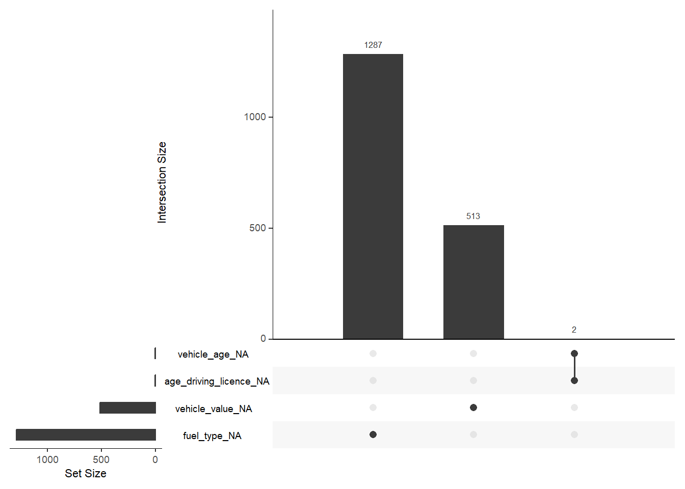
By Default ggplot has removed the null values here and a right skew is observed for this column.
ggplot(data=df,
aes(x = as.integer(vehicle_value))) +
geom_histogram(bins=20,
boundary = 100,
color="grey25",
fill="grey90") +
scale_x_continuous(labels = label_comma()) +
theme_gray() +
ggtitle("Distribution of Vehicle Value") +
labs(x = "Vehicle Value", y = "Count")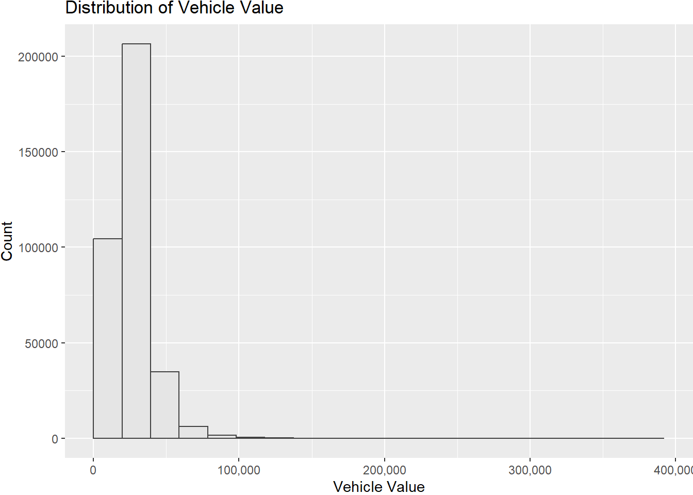
# 1. Run your categorical transformation for fuel_type (Mapping NA to "Unknown")
df_clean <- df %>%
mutate(
fuel_type = case_when(
fuel_type == 'D' ~ "Diesel",
fuel_type == 'G' ~ "Gasoline",
is.na(fuel_type) ~ "Unknown", # Label the 36% missing values explicitly
TRUE ~ "Others"
),
fuel_type = factor(fuel_type, levels = c("Gasoline", "Diesel", "Unknown", "Others"))
)
# 2. Build the Bar Chart Layer (p1)
p1 <- ggplot(data = df_clean, aes(x = fuel_type, fill = fuel_type)) +
geom_bar(color = "grey25", alpha = 0.8) +
theme_minimal() +
labs(
title = "Frequency Distribution of Fuel Types",
subtitle = "Explicitly highlighting missing data as 'Unknown'",
x = "Fuel Type Classification",
y = "Count",
fill = "Fuel Type"
)
# 3. Build the Numerical Missingness Audit Data Frame
missing_audit_data <- df %>%
summarise(
`Total Missing Rows` = format(sum(is.na(fuel_type)), big.mark = ","),
`Missing Percentage` = paste0(round(mean(is.na(fuel_type)) * 100, 2), "%")
)
# 4. Turn the data frame into a graphical table layer (p2)
p2 <- ggtexttable(missing_audit_data, rows = NULL)
# 5. Stitch them together vertically using patchwork
p1 / p2 + patchwork::plot_layout(heights = c(4, 1))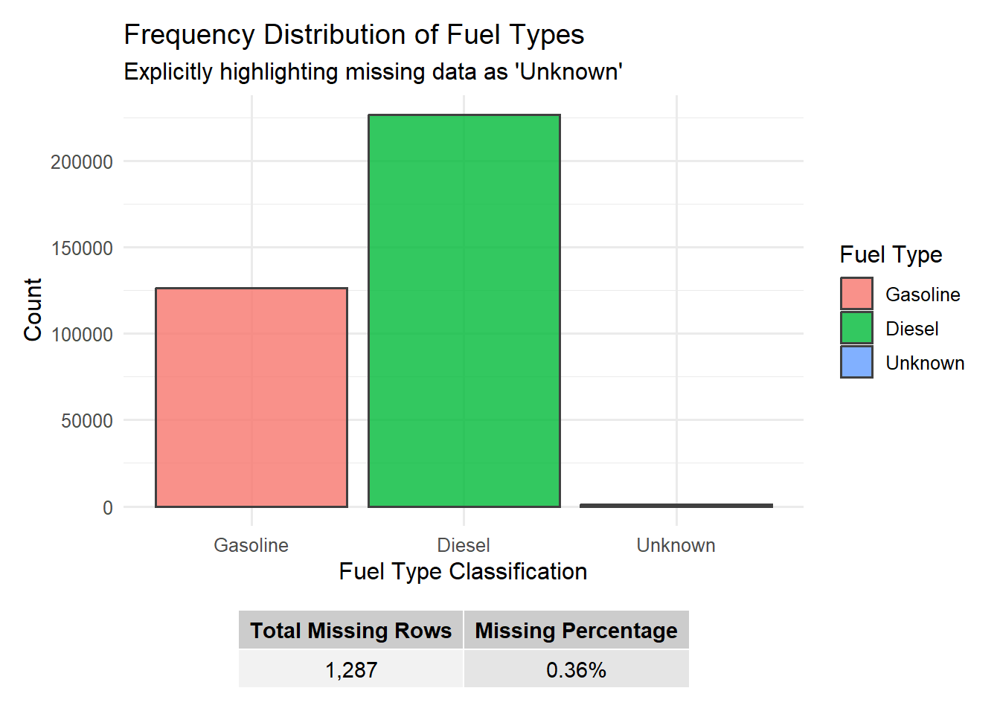
df %>%
summarise(
Total_Missing_Rows = sum(is.na(fuel_type)),
Percentage_Missing = mean(is.na(fuel_type)) * 100 # If this is > 5%, be careful with the mode!
) Total_Missing_Rows Percentage_Missing
1 1287 0.3634156# Create function to calculate mode
calc_mode <- function(x) {
distinct_values <- unique(x[!is.na(x)])
distinct_values[which.max(tabulate(match(x, distinct_values)))]
}
# Pre-calculate the mode safely outside the pipeline to unblock the compiler
fuel_mode <- calc_mode(df$fuel_type)
df_transformed <- df %>%
mutate(
# All the factor like variables
policy_type = case_when(
policy_type == "TP" ~ "Basic Third-Party",
policy_type == "TPG" ~ "Third-Party with Glass Cov",
policy_type == "CC" ~ "Third-Party with two or more Cov",
policy_type == "COMP_E" ~ "Comprehensive with Excess",
policy_type == "COMP_N" ~ "Comprehensive without Excess",
TRUE ~ "Others"
),
policy_status = case_when(
policy_status == 'A' ~ "Active",
policy_status == 'C' ~ "Cancelled",
TRUE ~ "Others"
),
business_type = case_when(
business_type == 'NB' ~ "New_Business",
business_type == 'P' ~ "Portfolio",
TRUE ~ "Others"
),
payment_frequency = case_when(
payment_frequency == 'A' ~ "Annual",
payment_frequency == 'S' ~ "Semi-Annual",
payment_frequency == 'Q' ~ "Quarterly",
TRUE ~ "Others"
),
bonus_score = case_when(
bonus_score == 'G' ~ "Positive",
bonus_score == 'N' ~ "Neutral",
bonus_score == 'B' ~ "Negative",
TRUE ~ "Others"
),
fuel_type = case_when(
fuel_type == 'D' ~ "Diesel",
fuel_type == 'G' ~ "Gasoline",
is.na(fuel_type) ~ NA_character_,
TRUE ~ "Others"
),
municipality_type = case_when(
municipality_type == 'I' ~ "Inland",
municipality_type == 'C' ~ "Coastal",
municipality_type == 'IS' ~ "Islands",
TRUE ~ "Others"
),
circulation_area = case_when(
circulation_area == 'U' ~ "Urban",
circulation_area == 'R' ~ "Rural",
TRUE ~ "Others"
),
# These are all the numeric conversions
vehicle_value = as.numeric(vehicle_value),
power_to_weight_ratio = as.numeric(power_to_weight_ratio),
total_premium = as.numeric(total_premium),
liability_premium = as.numeric(liability_premium),
property_damage_premium = as.numeric(property_damage_premium),
theft_premium = as.numeric(theft_premium),
fire_premium = as.numeric(fire_premium),
glass_premium = as.numeric(glass_premium),
legal_protection_premium = as.numeric(legal_protection_premium),
occupants_premium = as.numeric(occupants_premium),
total_incurred = as.numeric(total_incurred),
liability_incurred = as.numeric(liability_incurred),
liability_property_incurred = as.numeric(liability_property_incurred),
liability_injury_incurred = as.numeric(liability_injury_incurred),
property_incurred = as.numeric(property_incurred),
theft_incurred = as.numeric(theft_incurred),
fire_incurred = as.numeric(fire_incurred),
glass_incurred = as.numeric(glass_incurred),
legal_protection_incurred = as.numeric(legal_protection_incurred),
occupants_incurred = as.numeric(occupants_incurred),
total_exposure = as.numeric(total_exposure),
liability_exposure = as.numeric(liability_exposure),
# New variables created
underwriting_profit = total_premium - total_incurred
) %>%
mutate(
policy_type = factor(policy_type, levels = c(
"Basic Third-Party",
"Third-Party with Glass Cov",
"Third-Party with two or more Cov",
"Comprehensive with Excess",
"Comprehensive without Excess",
"Others"
)),
# Directly reference the column in median calculation to be safe
vehicle_value = replace_na(vehicle_value, median(vehicle_value, na.rm = TRUE)),
policy_status = as.factor(policy_status),
business_type = as.factor(business_type),
payment_frequency = as.factor(payment_frequency),
# Use the static pre-calculated scalar value here
fuel_type = as.factor(replace_na(fuel_type, fuel_mode)),
municipality_type = as.factor(municipality_type),
circulation_area = as.factor(circulation_area),
bonus_score = as.factor(bonus_score)
) %>%
filter(!is.na(vehicle_age))# 2. Re-create your comparative dataset (Long format)
df_before <- df %>%
select(vehicle_value) %>%
mutate(vehicle_value = as.numeric(vehicle_value), status = "Before")
df_after <- df_transformed %>%
select(vehicle_value) %>%
mutate(status = "After")
df_compare <- bind_rows(df_before, df_after) %>% filter(!is.na(vehicle_value))
# 2. Generate the side-by-side comparative violin plot safely
p1 <- ggplot(df_compare, aes(x = "Vehicle Value Profile", y = vehicle_value, fill = status)) +
# Layer 1: Draw Left Half (Before Imputation)
see::geom_violinhalf(
data = filter(df_compare, status == "Before"),
flip = FALSE,
alpha = 0.6,
color = "grey30"
) +
# Layer 2: Draw Right Half (After Imputation)
see::geom_violinhalf(
data = filter(df_compare, status == "After"),
flip = TRUE, # Only flip this specific layer
alpha = 0.6,
color = "grey30"
) +
scale_fill_manual(values = c("Before" = "#f8766d", "After" = "#00bfc4")) +
scale_y_continuous(labels = label_comma()) +
theme_minimal() +
labs(
title = "Imputation Audit: Vehicle Value Distribution",
subtitle = "Comparing raw data density against median-imputed data",
x = "",
y = "Vehicle Value ($)",
fill = "Status"
)
summary_table_data <- df_compare %>%
group_by(status) %>%
summarise(
Total_Rows = comma(n()),
Mean_Value = comma(mean(vehicle_value), accuracy = 1),
Median_Val = comma(median(vehicle_value), accuracy = 1),
Std_Dev = comma(sd(vehicle_value), accuracy = 1)
) %>%
rename(Status = status, `Total Rows` = Total_Rows, `Mean ($)` = Mean_Value, `Median ($)` = Median_Val, `SD ($)` = Std_Dev)
# 4. Create the Graphic Table Layer (p2)
p2 <- ggtexttable(summary_table_data, rows = NULL)
# 5. Use Patchwork to stitch them vertically and set heights
# The plot takes 80% of the vertical space, the table takes 20%
p1 / p2 + patchwork::plot_layout(heights = c(4, 1))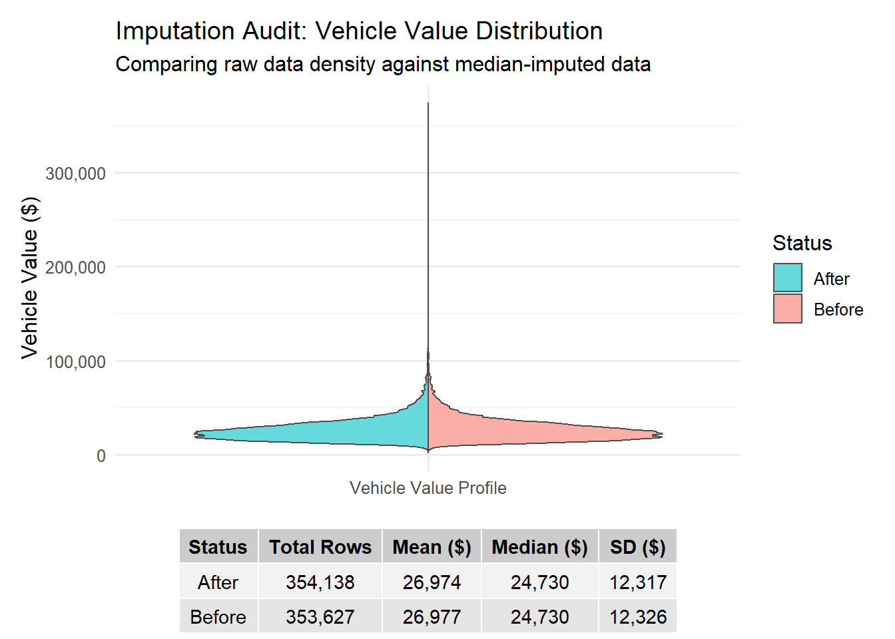
cat("--- FUEL PROPORTIONS PROFILE before imputation ---\n")--- FUEL PROPORTIONS PROFILE before imputation ---df %>%
count(fuel_type) %>%
mutate(Percentage_Share = paste0(round((n / sum(n)) * 100, 2), "%")) %>%
print() fuel_type n Percentage_Share
1 D 226402 63.93%
2 G 126451 35.71%
3 <NA> 1287 0.36%cat("--- FUEL PROPORTIONS PROFILE after imputation---\n")--- FUEL PROPORTIONS PROFILE after imputation---df_transformed %>%
count(fuel_type) %>%
mutate(Percentage_Share = paste0(round((n / sum(n)) * 100, 2), "%")) %>%
print() fuel_type n Percentage_Share
1 D 1287 0.36%
2 Diesel 226400 63.93%
3 Gasoline 126451 35.71%write_parquet(df_transformed, sink = "df_transformed.parquet")df_transformed = read_parquet("df_transformed.parquet")
# dplyr::glimpse(df_transformed)yearly_summary <- df_transformed %>%
group_by(year) %>%
summarize(
sum_premium = sum(total_premium, na.rm = TRUE),
sum_incurred = sum(total_incurred, na.rm = TRUE),
underwriting_profit = sum_premium - sum_incurred,
avg_rev_per_exposure = sum_premium / sum(total_exposure, na.rm = TRUE)
) %>%
arrange(year) %>%
# Calculate YoY changes
mutate(
premium_yoy = (sum_premium - lag(sum_premium)) / lag(sum_premium) * 100,
incurred_yoy = (sum_incurred - lag(sum_incurred)) / lag(sum_incurred) * 100
)
# =========================================================================
# STEP 2: Pivot & Format Labels for Plot 1 (Grouped Bars)
# =========================================================================
p1_data <- yearly_summary %>%
select(year, `Total Premium` = sum_premium, `Total Incurred Claims` = sum_incurred, premium_yoy, incurred_yoy) %>%
pivot_longer(
cols = c(`Total Premium`, `Total Incurred Claims`),
names_to = "Metric",
values_to = "Amount"
) %>%
# Assign the correct YoY percentage to the correct metric row
mutate(
yoy_val = if_else(Metric == "Total Premium", premium_yoy, incurred_yoy),
# Format text: If it's the first year, just show amount. Otherwise, show amount + YoY %
label_text = case_when(
is.na(yoy_val) ~ label_number(accuracy = 0.1, scale_cut = cut_short_scale(), prefix = "$")(Amount),
yoy_val >= 0 ~ paste0(label_number(accuracy = 0.1, scale_cut = cut_short_scale(), prefix = "$")(Amount), "\n(+", round(yoy_val, 1), "%)"),
TRUE ~ paste0(label_number(accuracy = 0.1, scale_cut = cut_short_scale(), prefix = "$")(Amount), "\n(", round(yoy_val, 1), "%)")
)
)
# =========================================================================
# STEP 3: Build Plot 1 - Grouped Bar Chart with Value & % Labels
# =========================================================================
# Explicitly defining bar positioning width so the text alignments align flawlessly
bar_width <- 0.6
dodge_width <- 0.7
p1 <- ggplot(p1_data, aes(x = factor(year), y = Amount, fill = Metric)) +
geom_bar(stat = "identity", position = position_dodge(width = dodge_width), width = bar_width) +
# Add dynamic text labels on top of bars
geom_text(
aes(label = label_text),
position = position_dodge(width = dodge_width),
vjust = -0.25, # Pushes text slightly above the bar boundary
size = 3, # Clean font size to prevent overlapping
fontface = "bold",
lineheight = 0.85 # Cleans up spacing between the raw amount and the % text line
) +
scale_fill_manual(values = c("Total Premium" = "#2ca02c", "Total Incurred Claims" = "#d9534f")) +
scale_y_continuous(
labels = label_number(scale_cut = cut_short_scale(), prefix = "$"),
expand = expansion(mult = c(0, 0.15)) # Adds 15% headroom at the top so labels don't clip
) +
labs(
title = "A: Premium Inflow vs. Claims Outflow",
x = NULL,
y = "Total Financial Amount (Y-O-Y % Increase)",
fill = NULL
) +
theme_minimal(base_size = 11) +
theme(
legend.position = "top",
plot.title = element_text(face = "bold", size = 12),
panel.grid.minor = element_blank()
)
# =========================================================================
# STEP 4: Build Plot 2 - Net Underwriting Profit Trend with Labels
# =========================================================================
yearly_summary <- yearly_summary %>%
mutate(
profit_label = label_number(accuracy = 0.1, scale_cut = cut_short_scale(), prefix = "$")(underwriting_profit)
)
p2 <- ggplot(yearly_summary, aes(x = factor(year), y = underwriting_profit, fill = underwriting_profit > 0)) +
geom_bar(stat = "identity", width = 0.5, alpha = 0.9) +
geom_text(
aes(label = profit_label, vjust = if_else(underwriting_profit >= 0, -0.4, 1.4)),
size = 3,
fontface = "bold"
) +
scale_fill_manual(values = c("TRUE" = "#2ca02c", "FALSE" = "#d62728"), guide = "none") +
scale_y_continuous(
labels = label_number(scale_cut = cut_short_scale(), prefix = "$"),
expand = expansion(mult = c(0.15, 0.15))
) +
labs(
title = "B: Net Underwriting Profit Trend",
subtitle = "Green = Profitable | Red = Underwriting Loss",
x = NULL,
y = "Net Profit"
) +
theme_minimal(base_size = 11) +
theme(
plot.title = element_text(face = "bold", size = 12),
plot.subtitle = element_text(size = 9, color = "gray30"),
panel.grid.minor = element_blank()
)
# =========================================================================
# STEP 5: Build Plot 3 - Average Revenue Per Unit of Exposure
# =========================================================================
p3 <- ggplot(yearly_summary, aes(x = factor(year), y = avg_rev_per_exposure, group = 1)) +
geom_line(color = "#D4AF37", linewidth = 1.2) +
geom_point(color = "#1c3b57", size = 3) +
geom_text(
aes(label = paste0("$", round(avg_rev_per_exposure, 1))),
vjust = -1,
size = 3.5,
fontface = "bold"
) +
scale_y_continuous(
labels = label_number(prefix = "$"),
expand = expansion(mult = c(0.1, 0.2))
) +
labs(
title = "C: Average Premium Revenue per Unit of Exposure Year",
x = "Year",
y = "Avg Premium / Exposure"
) +
theme_minimal(base_size = 11) +
theme(
plot.title = element_text(face = "bold", size = 12),
panel.grid.minor = element_blank()
)
# =========================================================================
# STEP 6: Assemble Framework Dashboard Layout and Print
# =========================================================================
dashboard <- (p1 | p2) / p3 +
plot_annotation(
title = "Overall Financial Health",
subtitle = "Year-on-Year metrics tracking revenue growth, claims impact, and net margin",
theme = theme(
plot.title = element_text(face = "bold", size = 16, margin = margin(b = 5)),
plot.subtitle = element_text(color = "gray40", size = 11, margin = margin(b = 15))
)
)
# Preview the clean dashboard
print(dashboard)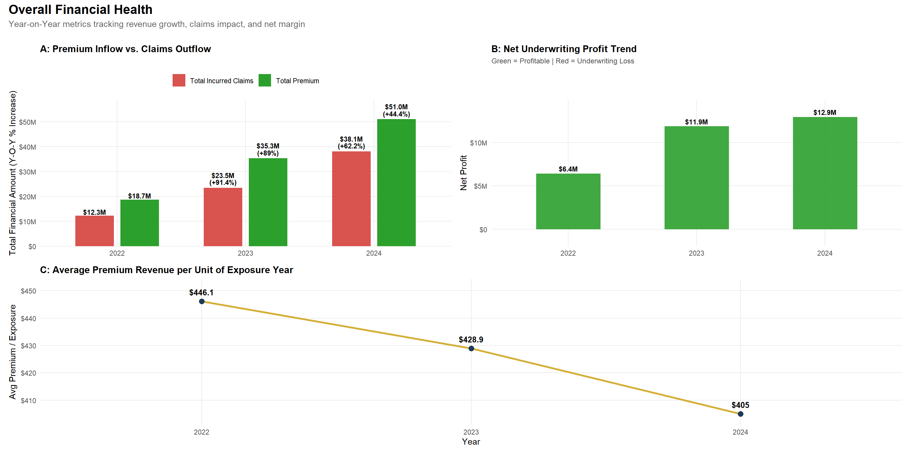
In this section, we want to see the overall view of the motor insurance view. How much of the portfolio belongs to each category of product.
pareto_data <- df_transformed %>%
group_by(policy_type) %>%
summarize(total_premium_sum = sum(total_premium, na.rm = TRUE)) %>%
arrange(desc(total_premium_sum)) %>%
mutate(
policy_type = factor(policy_type, levels = policy_type),
cum_sum = cumsum(total_premium_sum),
total_sum = sum(total_premium_sum),
cum_pct = (cum_sum / total_sum) * 100,
# NEW METRIC: Calculates the remaining revenue % from this product onwards
remaining_pct = 100 - lag(cum_pct, default = 0)
)
total_premium_total <- sum(pareto_data$total_premium_sum)
p1 <- ggplot(pareto_data, aes(x = policy_type)) +
geom_bar(aes(y = total_premium_sum, fill = total_premium_sum), stat = "identity", alpha = 0.9) +
scale_fill_gradient(low = "#A2E1A6", high = "#137333", guide = "none") +
# Plot the downward-sloping Remaining Percentage line
geom_line(aes(y = remaining_pct * (total_premium_total / 100), group = 1), color = "#D4AF37", linewidth = 1.2) +
geom_point(aes(y = remaining_pct * (total_premium_total / 100)), color = "#D4AF37", size = 2.5) +
# Unified Y-Axis (Right-hand axis remains 0% at bottom, 100% at top)
scale_y_continuous(
name = "Total Premium Amount",
limits = c(0, total_premium_total * 1.05),
breaks = seq(0, total_premium_total * 1.05, by = 10000000),
labels = label_comma(),
sec.axis = sec_axis(
trans = ~ . / total_premium_total * 100,
name = "Remaining Portfolio Percentage (%)",
breaks = seq(0, 100, by = 10)
)
) +
labs(
title = "Total Premium and Remaining Revenue Tail by Policy Type",
subtitle = "The gold line tracks how much portfolio revenue remains from each product onwards",
x = "Policy Type"
) +
theme_minimal() +
theme(
axis.text.x = element_text(angle = 45, vjust = 1, hjust = 1, face = "bold"),
plot.title = element_text(face = "bold", size = 14),
panel.grid.minor = element_blank()
)
pareto_data2 <- df_transformed %>%
group_by(policy_type) %>%
summarize(total_incurred_sum = sum(total_incurred, na.rm = TRUE)) %>%
arrange(desc(total_incurred_sum)) %>%
mutate(
policy_type = factor(policy_type, levels = policy_type),
cum_sum = cumsum(total_incurred_sum),
total_sum = sum(total_incurred_sum),
cum_pct = (cum_sum / total_sum) * 100,
# NEW METRIC: Calculates the remaining revenue % from this product onwards
remaining_pct = 100 - lag(cum_pct, default = 0)
)
total_incurred_total <- sum(pareto_data2$total_incurred_sum)
total_premium_total <- sum(pareto_data$total_premium_sum)
max_y_limit <- total_premium_total * 1.05
p2 <- ggplot(pareto_data2, aes(x = policy_type)) +
geom_bar(aes(y = total_incurred_sum, fill = total_incurred_total), stat = "identity", alpha = 0.9) +
scale_fill_gradient(low = "#3A1414", high = "#E57373", guide = "none") +
scale_y_continuous(
name = "Total Claim Amount",
limits = c(0, max_y_limit),
breaks = seq(0, max_y_limit, by = 10000000),
labels = label_comma()
) +
labs(
title = "Total Claims by Policy Type",
subtitle = "The silver line tracks how much portfolio claim remains from each product onwards",
x = "Policy Type"
) +
theme_minimal() +
theme(
axis.text.x = element_text(angle = 45, vjust = 1, hjust = 1, face = "bold"),
plot.title = element_text(face = "bold", size = 14),
panel.grid.minor = element_blank()
)
p1 + p2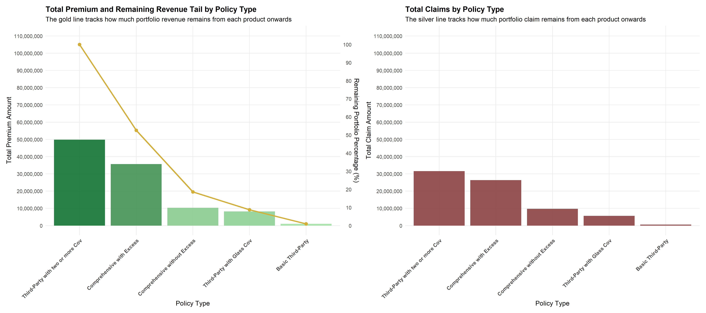
premium_summary <- df_transformed %>%
group_by(policy_type) %>%
summarize(total_premium_sum = sum(total_premium, na.rm = TRUE))
incurred_summary <- df_transformed %>%
group_by(policy_type) %>%
summarize(total_incurred_sum = sum(total_incurred, na.rm = TRUE))
# Merge and calculate cumulative metrics based on Premium Rank
pareto_combined <- premium_summary %>%
left_join(incurred_summary, by = "policy_type") %>%
arrange(desc(total_premium_sum)) %>%
mutate(
policy_type = factor(policy_type, levels = policy_type),
# Premium Tail Metrics
cum_sum_prem = cumsum(total_premium_sum),
total_sum_prem = sum(total_premium_sum),
cum_pct_prem = (cum_sum_prem / total_sum_prem) * 100,
remaining_pct_prem = 100 - lag(cum_pct_prem, default = 0),
# Claims Tail Metrics
cum_sum_inc = cumsum(total_incurred_sum),
total_sum_inc = sum(total_incurred_sum),
cum_pct_inc = (cum_sum_inc / total_sum_inc) * 100,
remaining_pct_inc = 100 - lag(cum_pct_inc, default = 0)
)
# Master anchors for dual-axis transformation
total_premium_total <- sum(pareto_combined$total_premium_sum)
max_y_limit <- total_premium_total * 1.1
# Pivot long for side-by-side dodge bars
bar_data <- pareto_combined %>%
select(policy_type, Premium = total_premium_sum, Claims = total_incurred_sum) %>%
pivot_longer(cols = c(Premium, Claims), names_to = "Metric", values_to = "Amount") %>%
mutate(Metric = factor(Metric, levels = c("Premium", "Claims")))
# --- 2. GENERATE OVERLAYED PLOT ---
ggplot() +
# Side-by-side grouped bars for Premium vs Claims
geom_bar(data = bar_data, aes(x = policy_type, y = Amount, fill = Metric),
stat = "identity", position = position_dodge(width = 0.8), alpha = 0.85, width = 0.7) +
# Gold Line: Remaining Revenue Tail
geom_line(data = pareto_combined, aes(x = as.numeric(policy_type) - 0.2,
y = remaining_pct_prem * (total_premium_total / 100), group = 1, color = "Remaining Revenue Tail"),
linewidth = 1.2) +
geom_point(data = pareto_combined, aes(x = as.numeric(policy_type) - 0.2,
y = remaining_pct_prem * (total_premium_total / 100)), color = "#D4AF37", size = 2.5) +
# Dual Axis Configuration
scale_y_continuous(
name = "Financial Amount ($)",
limits = c(0, max_y_limit),
breaks = seq(0, max_y_limit, by = 10000000),
labels = label_comma(),
sec.axis = sec_axis(
trans = ~ . / total_premium_total * 100,
name = "Remaining Portfolio Percentage (%)",
breaks = seq(0, 100, by = 10)
)
) +
# Styling and Legends
scale_fill_manual(values = c("Premium" = "#137333", "Claims" = "#A94442")) +
scale_color_manual(values = c("Remaining Revenue Tail" = "#D4AF37", "Remaining Claims Tail" = "#90A4AE")) +
labs(
title = "Portfolio Premium & Incurred Claims",
subtitle = "Bars show Total Premium (Green)/ Claims (Red).\n Gold Line shows the propotion of portfolio.",
x = "Policy Type",
fill = "Financial Metrics",
color = "Portfolio Tails"
) +
theme_minimal() +
theme(
axis.text.x = element_text(angle = 45, vjust = 1, hjust = 1, face = "bold"),
plot.title = element_text(face = "bold", size = 14),
legend.position = "bottom",
legend.box = "vertical",
panel.grid.minor = element_blank()
)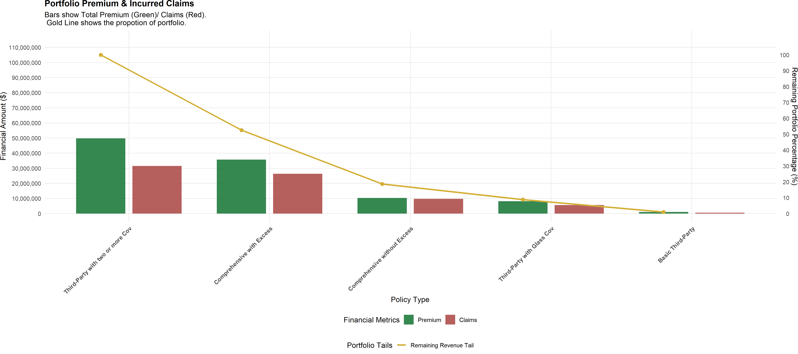
plot_policy_distribution <- function(data, target_policy, target_metric = "total_premium") {
# 1. Dynamically filter and prepare data based on function arguments
# We use .data[[target_metric]] to allow passing the column name as a string
plot_data <- data %>%
filter(
policy_type == target_policy,
.data[[target_metric]] > 0
) %>%
mutate(year = factor(year))
# Determine dynamic text for labels
metric_label <- gsub("_", " ", target_metric) %>% tools::toTitleCase()
# 2. Safe Statistical Check
unique_years <- unique(plot_data$year)
if (length(unique_years) > 1) {
# Dynamically build formula: target_metric ~ year
formula_obj <- as.formula(paste(target_metric, "~ year"))
stat_test <- kruskal.test(formula_obj, data = plot_data)
stat_label <- paste0(
"Kruskal-Wallis chi-squared = ", round(stat_test$statistic, 2),
", df = ", stat_test$parameter,
", p-value = ", scales::scientific(stat_test$p.value, digits = 3)
)
} else if (length(unique_years) == 1) {
stat_label <- paste0("Kruskal-Wallis: Insufficient groups (Only ", unique_years, " data available)")
} else {
# If string matching yields 0 rows, print warning and stop to avoid ggplot crash
warning(paste0("No data found for policy type: '", target_policy, "' with ", metric_label, " > 0."))
return(NULL)
}
# 3. Generate the Plot
p <- ggplot(plot_data, aes(x = year, y = .data[[target_metric]], fill = year)) +
# The Half-Eye distribution view
stat_halfeye(
adjust = 0.5,
width = 0.6,
.width = c(0.66, 0.95),
point_color = "black",
interval_color = "black",
alpha = 0.7
) +
# Scale and formatting
scale_y_log10(labels = scales::label_comma(prefix = "$")) +
scale_fill_brewer(palette = "Blues", guide = "none") +
# Informative labels that update dynamically based on your inputs
labs(
title = paste0(metric_label, " Distribution across Years"),
subtitle = paste0(target_policy, "\n", stat_label),
x = "Year",
y = paste0(metric_label, " (Log Scale)")
) +
theme_minimal(base_size = 12) +
theme(
plot.title = element_text(face = "bold", size = 14),
plot.subtitle = element_text(color = "gray30", size = 10, face = "italic"),
panel.grid.minor = element_blank(),
axis.text = element_text(face = "bold")
) +
coord_flip()
return(p)
}
plot_pairwise_matrix <- function(data, target_policy, target_metric = "total_premium") {
# 1. Filter data based on input arguments
plot_data <- data %>%
filter(
policy_type == target_policy,
.data[[target_metric]] > 0
) %>%
mutate(year = factor(year))
# Clean up the metric name for beautiful axis/title labels
metric_label <- gsub("_", " ", target_metric) %>% tools::toTitleCase()
# 2. Check if pairwise testing is mathematically possible
if (length(unique(plot_data$year)) < 2) {
warning(paste0("Skipping matrix: '", target_policy, "' does not have enough distinct years with data."))
return(NULL)
}
# 3. Execute the Pairwise Wilcoxon Test with Holm Adjustment
wt_result <- pairwise.wilcox.test(
x = plot_data[[target_metric]],
g = plot_data$year,
p.adjust.method = "holm"
)
p_matrix <- wt_result$p.value
# Handle edge case where the matrix is completely empty/NULL
if (all(is.na(p_matrix))) {
warning(paste0("No valid variance found to compute pairwise shifts for '", target_policy, "'."))
return(NULL)
}
# 4. Transform matrix to a tidy long-format dataframe
p_df_long <- as.data.frame(p_matrix) %>%
mutate(Group_B = rownames(.)) %>%
pivot_longer(
cols = -Group_B,
names_to = "Group_A",
values_to = "p_val"
) %>%
filter(!is.na(p_val)) %>%
mutate(
# Ensure factor matching for explicit manual scale mapping
is_significant = factor(p_val < 0.05, levels = c("TRUE", "FALSE")),
p_label = if_else(p_val < 0.001, "p < 0.001", paste0("p = ", round(p_val, 3)))
)
# 5. Build the Dynamic Matrix Plot
p <- ggplot(p_df_long, aes(x = Group_A, y = Group_B, fill = is_significant)) +
geom_tile(color = "white", linewidth = 1.5) +
geom_text(aes(label = p_label), color = "white", fontface = "bold", size = 4.5) +
# Red/Coral for significant shifts, neutral grey for stagnant periods
scale_fill_manual(
values = c("TRUE" = "#2ca02c", "FALSE" = "#7f8c8d"),
labels = c("TRUE" = "Significant Shift (p < 0.05)", "FALSE" = "No Stat. Difference"),
name = "Holm Conclusion",
drop = FALSE
) +
# FORCE the legend preview boxes to show their true assigned colors manually
guides(
fill = guide_legend(
override.aes = list(fill = c("#2ca02c", "#7f8c8d"))
)
) +
labs(
title = paste0("Pairwise Post-Hoc Shifts Matrix (", metric_label, ")"),
subtitle = paste0(target_policy, "\nWilcoxon Rank-Sum Test (Holm-Adjusted Method)"),
x = "Baseline Year (Group A)",
y = "Comparison Year (Group B)"
) +
theme_minimal(base_size = 12) +
theme(
plot.title = element_text(face = "bold", size = 14),
plot.subtitle = element_text(color = "gray30", face = "italic", size = 10, margin = margin(b = 10)),
axis.text = element_text(face = "bold", size = 11),
panel.grid = element_blank(),
legend.position = "bottom",
legend.title = element_text(face = "bold")
)
return(p)
}plot_policy_distribution(df_transformed, "Third-Party with two or more Cov")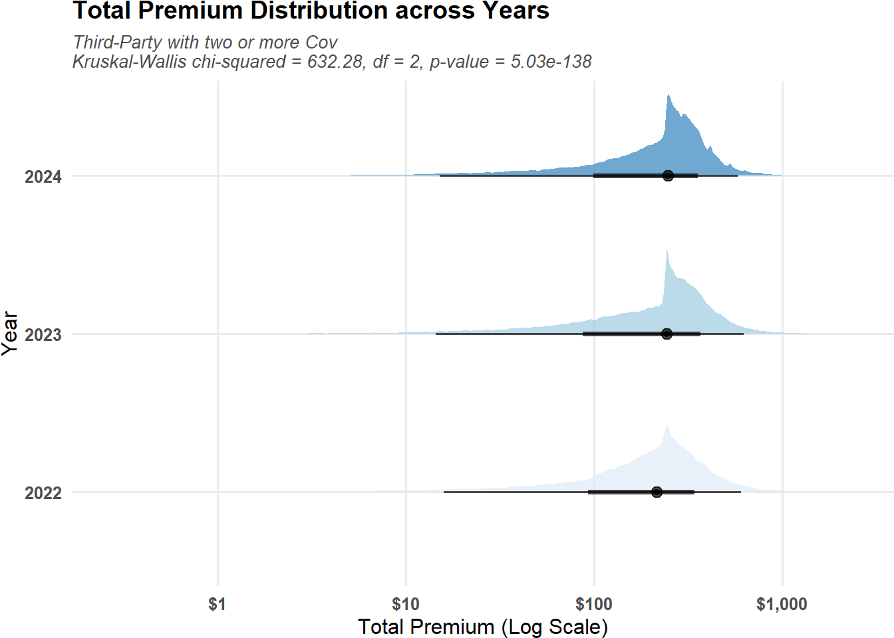
plot_pairwise_matrix(df_transformed, "Third-Party with two or more Cov")plot_policy_distribution(df_transformed, "Comprehensive with Excess")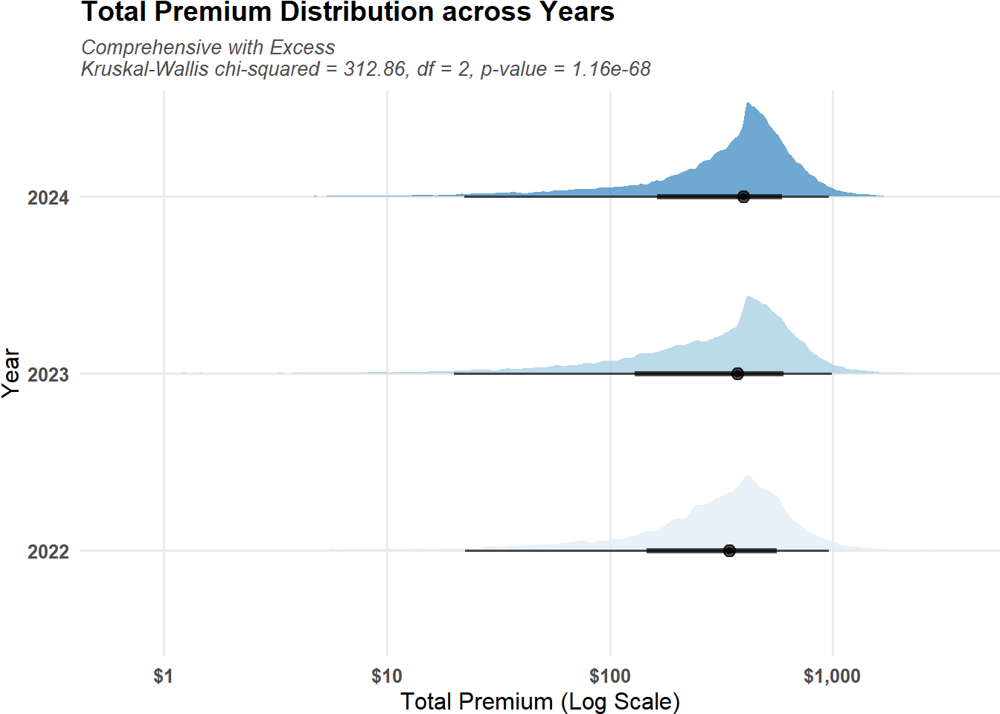
plot_pairwise_matrix(df_transformed, "Comprehensive with Excess")plot_policy_distribution(df_transformed, "Comprehensive without Excess")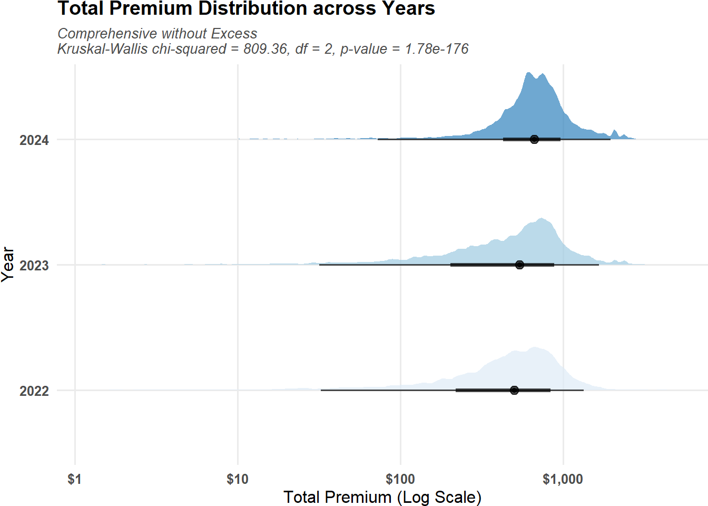
plot_pairwise_matrix(df_transformed, "Comprehensive without Excess")plot_policy_distribution(df_transformed, "Third-Party with Glass Cov")plot_pairwise_matrix(df_transformed, "Third-Party with Glass Cov")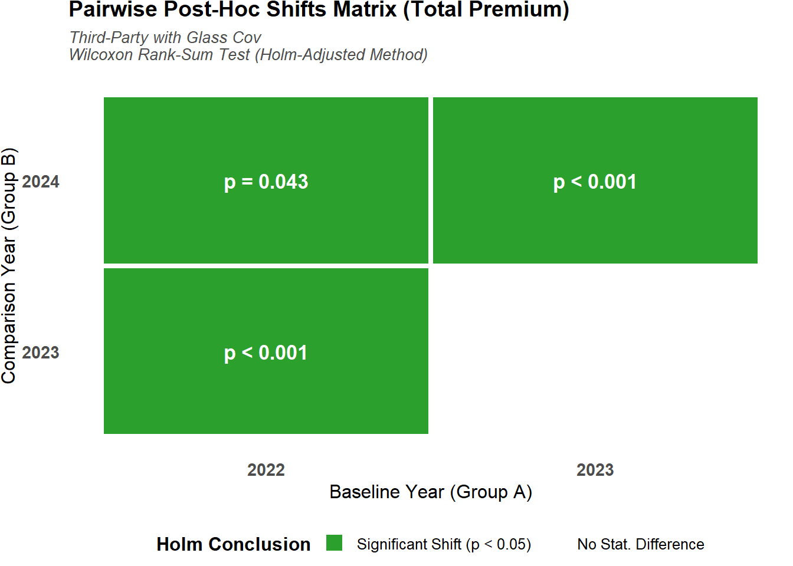
plot_policy_distribution(df_transformed, "Basic Third-Party")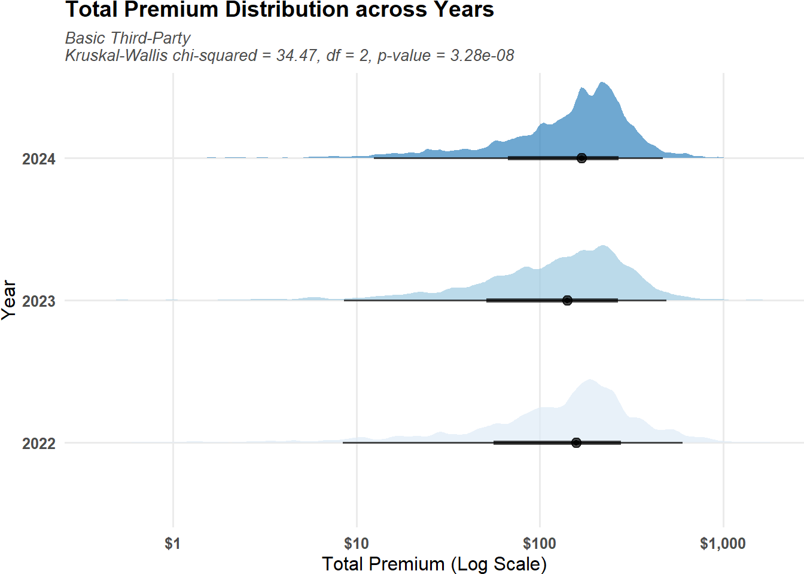
plot_pairwise_matrix(df_transformed, "Basic Third-Party")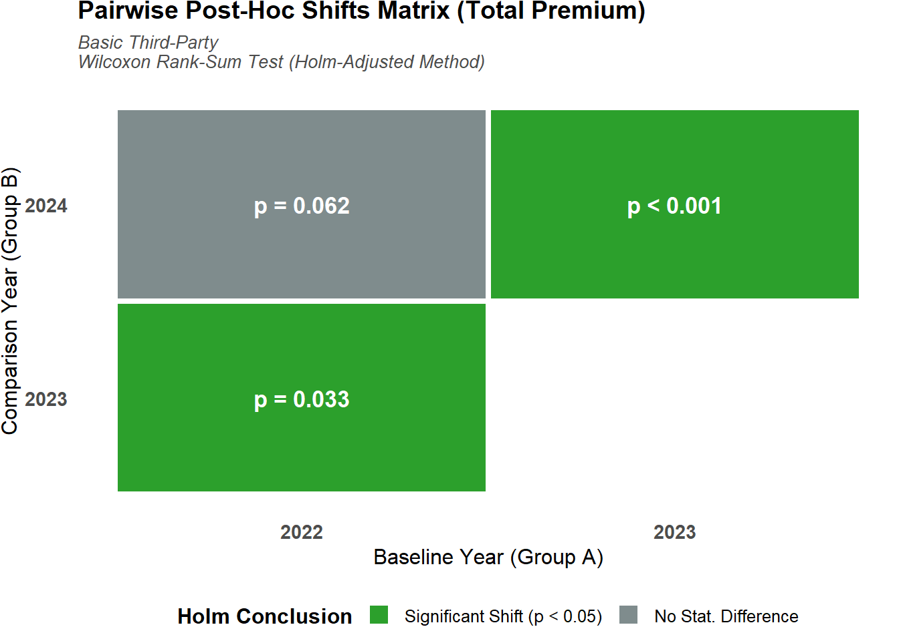
Function created to ease the coding below. Instead of blue we will use red for claims for the violin plot below. We also remove log in the Y axis as there is less claim variation in price as compared to premiums
plot_claims_distribution <- function(data, target_policy, target_metric = "total_incurred") {
# 1. Dynamically filter and prepare data based on function arguments
# We use .data[[target_metric]] to allow passing the column name as a string
plot_data <- data %>%
filter(
policy_type == target_policy,
.data[[target_metric]] > 0
) %>%
mutate(year = factor(year))
# Determine dynamic text for labels
metric_label <- gsub("_", " ", target_metric) %>% tools::toTitleCase()
# 2. Safe Statistical Check
unique_years <- unique(plot_data$year)
if (length(unique_years) > 1) {
# Dynamically build formula: target_metric ~ year
formula_obj <- as.formula(paste(target_metric, "~ year"))
stat_test <- kruskal.test(formula_obj, data = plot_data)
stat_label <- paste0(
"Kruskal-Wallis chi-squared = ", round(stat_test$statistic, 2),
", df = ", stat_test$parameter,
", p-value = ", scales::scientific(stat_test$p.value, digits = 3)
)
} else if (length(unique_years) == 1) {
stat_label <- paste0("Kruskal-Wallis: Insufficient groups (Only ", unique_years, " data available)")
} else {
# If string matching yields 0 rows, print warning and stop to avoid ggplot crash
warning(paste0("No data found for policy type: '", target_policy, "' with ", metric_label, " > 0."))
return(NULL)
}
# 3. Generate the Plot
p <- ggplot(plot_data, aes(x = year, y = .data[[target_metric]], fill = year)) +
# The Half-Eye distribution view
stat_halfeye(
width = 0.6,
.width = c(0.66, 0.95),
point_color = "black",
interval_color = "black",
alpha = 0.7
) +
scale_y_log10(
limits = c(0.10, 500000),
labels = scales::label_dollar(),
breaks = c(0.10, 1, 10, 100, 1000, 10000, 100000, 500000)
) +
scale_fill_brewer(palette = "Reds", guide = "none") +
# Informative labels that update dynamically based on your inputs
labs(
title = paste0(metric_label, " Distribution across Years"),
subtitle = paste0(target_policy, "\n", stat_label),
x = "Year",
y = paste0(metric_label, " (Log Scale)")
) +
theme_minimal(base_size = 12) +
theme(
plot.title = element_text(face = "bold", size = 14),
plot.subtitle = element_text(color = "gray30", size = 10, face = "italic"),
panel.grid.minor = element_blank(),
axis.text = element_text(face = "bold")
) +
coord_flip()
return(p)
}plot_claims_distribution(df_transformed,"Third-Party with two or more Cov")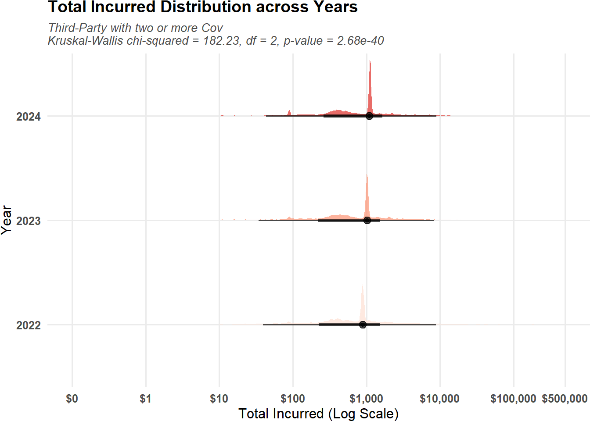
plot_pairwise_matrix(df_transformed, "Third-Party with two or more Cov","total_incurred")plot_claims_distribution(df_transformed,"Comprehensive with Excess")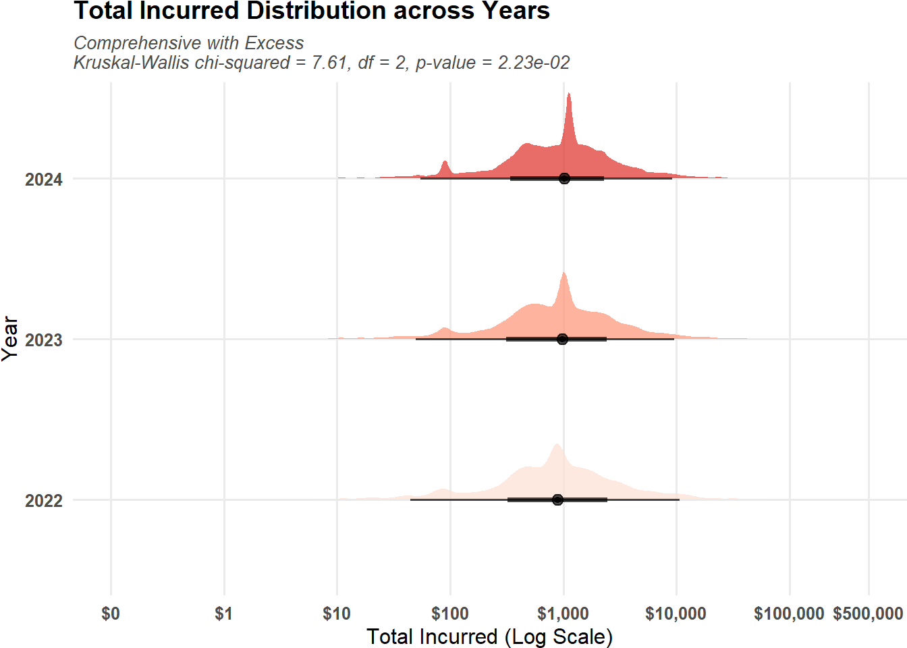
plot_pairwise_matrix(df_transformed, "Comprehensive with Excess","total_incurred")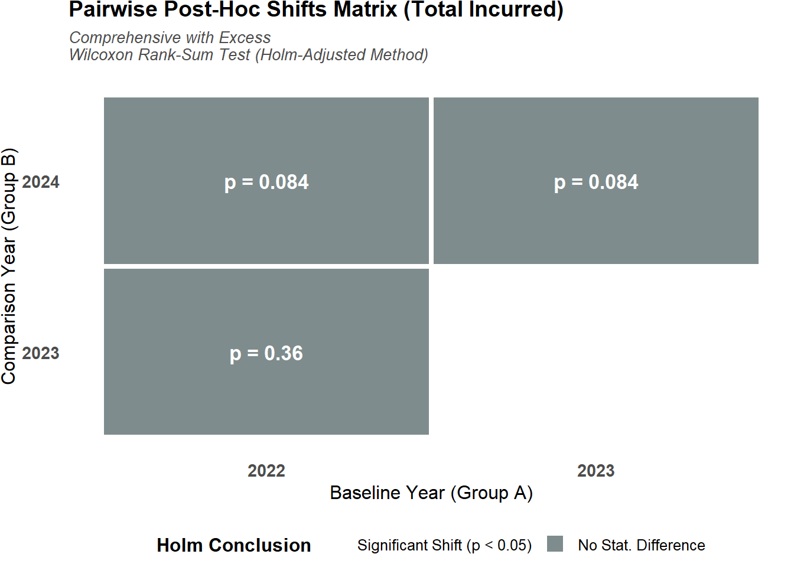
plot_claims_distribution(df_transformed,"Comprehensive without Excess")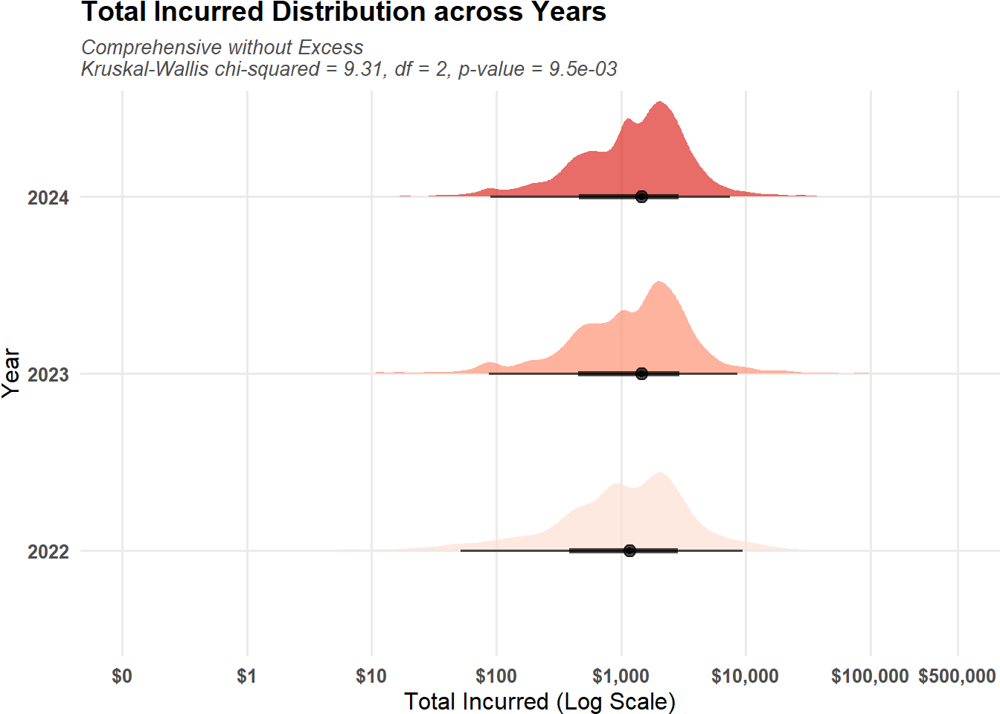
plot_pairwise_matrix(df_transformed, "Comprehensive without Excess","total_incurred")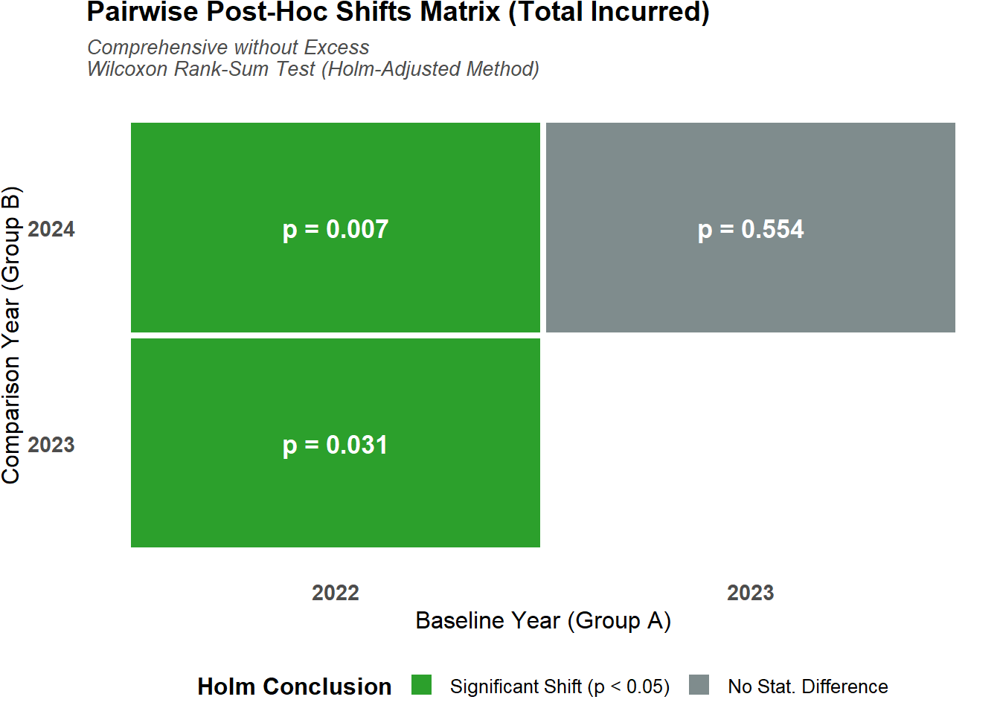
plot_claims_distribution(df_transformed,"Third-Party with Glass Cov")plot_pairwise_matrix(df_transformed, "Third-Party with Glass Cov","total_incurred")plot_claims_distribution(df_transformed,"Basic Third-Party")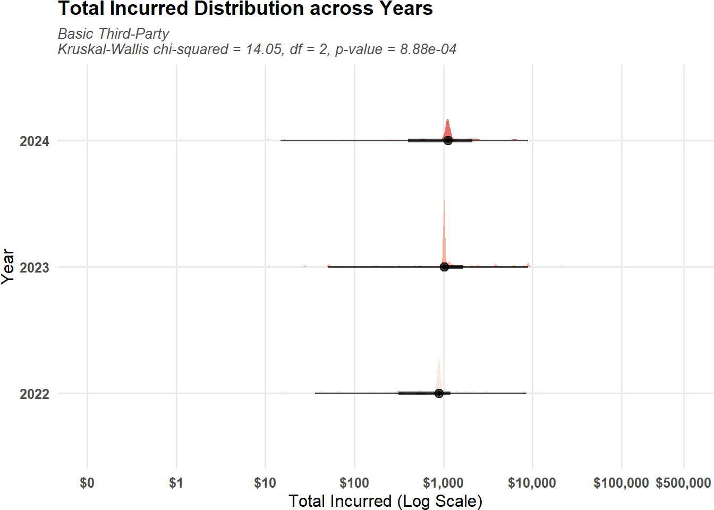
plot_pairwise_matrix(df_transformed, "Basic Third-Party","total_incurred")⚠️Third-Party with two or more Cov:
Total Premium Distribution change is associated with more lower priced premiums, although the median remain relatively similar.
Median of claims stayed the same from 2022 to 2024 but the number of $1000 (log scale) claims increases sharply. There are also more variation of claims below the 25th percentile of all claims
⚠️Comprehensive with Excess:
Distribution change seems to be associated with more lower priced premiums, although the medium remain relatively similar.
Overall distribution is statistically significant (p = 2.23e-03) when using the Kruskal Wallis Test, but shows a statistically insignificance when using the Wilcoxon Rank-Sum test with Holm Adjusted method. This shows that on a year on year basis, there is no big change in the claims and its stable but a change is observable from 2022 and 2024. The claims is stable and predictable
✅Comprehensive without excess: - Pricing for this category seems to have move to a higher tier as compared to 2023 and 2022 as more motor insurance plans has shifted to a higher premium tier.
General shape of the claims are rather similar amongst the 3 years, and similarly to our claims, there are two distinct peaks in the distribution.
claim and pricing display similar patterns and no drastic movement is observed
✅Third Party with Glass Cov - Although this is change in distribution when comparing the 3 years. The year 2022 and 2024 (\(p-value = 0.043\)) is very close to the alpha value tolerance level of 0.05. This could mean that the distribution is nearing the distribution from 2024 to 2022.
⚠️Basic Third Party Plan:
The Interquartile range of this price plan shortern and differs from 2022 and 2023. We also observed a split peak for the distribution for 2024 meaning there could be another sub group in this product. It is also likely the case that the 2024 total premiums has remain the same as 2022 as per the (\(p-value = 0.062\))
Claim pattern have change as well from the bulge in claims around the medium claims in 2024 as compared to 2022 and 2023. IQR now is longer and less predictable.
heatmap_data <- df_transformed %>%
# Create logical bins for your continuous variables
mutate(
age_bin = cut(driver_age,
breaks = c(17, 25, 35, 45, 55, 65, Inf),
labels = c("18-25", "26-35", "36-45", "46-55", "56-65", "66+")),
v_age_bin = cut(vehicle_age,
breaks = c(-1, 3, 6, 10, 15, Inf),
labels = c("0-3 yrs", "4-6 yrs", "7-10 yrs", "11-15 yrs", "16+ yrs"))
) %>%
# Group by the bins to isolate each intersection pocket
group_by(age_bin, v_age_bin) %>%
# Calculate aggregate metrics per cell
summarise(
total_policies = n(),
total_liability_claims = sum(liability_property_claims, na.rm = TRUE),
# Calculate the Claim Rate (Frequency per policy/exposure)
claim_rate = total_liability_claims / total_policies,
.groups = "drop"
) %>%
# Optional: Filter out empty or extremely low-volume cells to remove noise
filter(total_policies > 10)
# 2. Plot the binned matrix
ggplot(heatmap_data, aes(x = v_age_bin, y = age_bin, fill = claim_rate)) +
geom_tile(color = "white", lwd = 0.5, linetype = 1) +
# Use a color scale that makes high values (the spike) pop out vividly
scale_fill_viridis_c(option = "inferno", direction = -1, name = "Claim Rate") +
# Add the actual text values inside the tiles for quick confirmation
geom_text(aes(label = scales::percent(claim_rate, accuracy = 0.1)),
color = "white", size = 3.5, fontface = "bold") +
labs(
title = "Liability Claim Frequency Matrix",
subtitle = "Identifying localized risk spikes across driver and vehicle age pockets",
x = "Vehicle Age Group",
y = "Driver Age Group"
) +
theme_minimal() +
theme(
plot.title = element_text(face = "bold", size = 14),
axis.text = element_text(size = 11),
panel.grid = element_blank()
)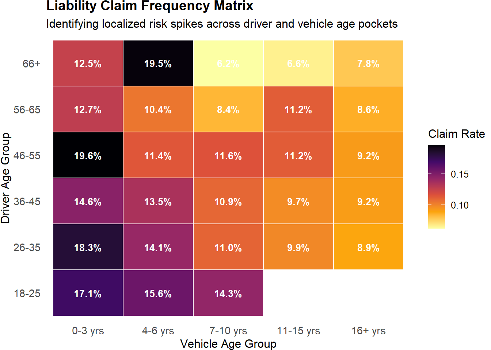
# Aggregate data by categorical segments
treemap_data <- df_transformed %>%
filter(policy_type == "Third-Party with two or more Cov") %>%
group_by(vehicle_brand, municipality_type, circulation_area) %>%
summarise(
total_policies = n(),
total_liability_claims = sum(liability_property_claims, na.rm = TRUE),
# Calculate the Claim Rate for color-mapping
claim_rate = total_liability_claims / total_policies,
.groups = "drop"
) %>%
# Filter out tiny segments (e.g., fewer than 5 policies) to keep the visual clean
filter(total_policies >= 5) %>%
# Create a clean text label for each tile
mutate(tile_label = paste0(vehicle_brand, "\n", municipality_type, "-", circulation_area))
ggplot(treemap_data, aes(area = total_policies, fill = claim_rate, label = tile_label)) +
geom_treemap(color = "white", start = "topleft") +
# Using the same intense color scale to easily contrast with your previous heatmap
scale_fill_viridis_c(option = "inferno", direction = -1, name = "Claim Rate",
labels = scales::percent_format(accuracy = 1)) +
# Dynamic text wrapping inside the tiles
geom_treemap_text(fontface = "bold", color = "white", place = "center",
grow = FALSE, size = 11, min.size = 6) +
labs(
title = "Multivariate Portfolio Risk Treemap",
subtitle = "Tile Size = Volume of Policies | Tile Color = Liability Property Claim Rate",
caption = "Filtered for segments with 5+ policies"
) +
theme_minimal() +
theme(
plot.title = element_text(face = "bold", size = 14),
legend.position = "right"
)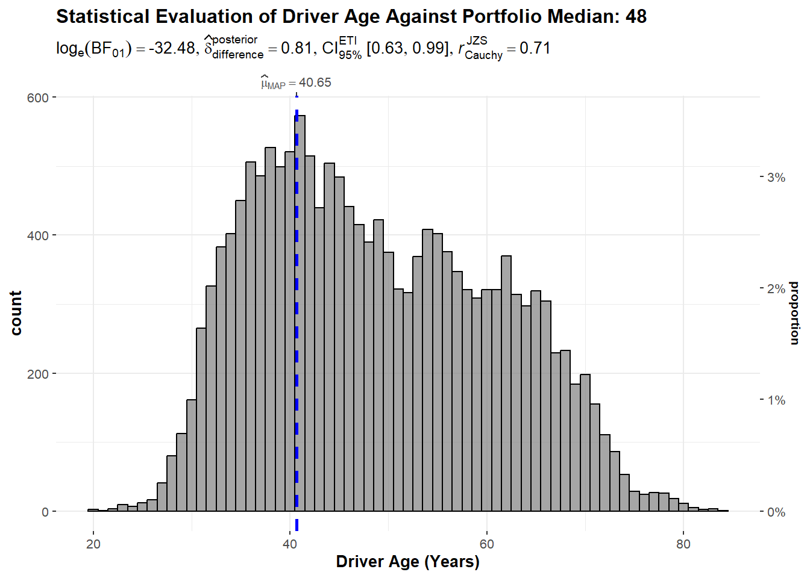
The above treemap suggest that it is brand agnostic when it comes to vehicle brand, municipality type, and circulation area
In the previous section we determine that the above mentioned products warrants further study We will look into the profile of the drivers within this segments -
“We are testing whether our ‘Third-Party with two or more Cov’/‘Basic Third Party’ portfolio is backed by the same age profile as our general business baseline (\(H_0\)), or if it has drifted into a statistically distinct demographic risk pool (\(H_1\)).”
ggstatsplot::gghistostats(
data = df_transformed %>% filter(policy_type == "Third-Party with two or more Cov") ,
x = driver_age,
type = "bayesian",
test.value = median(df_transformed$driver_age, na.rm = TRUE),
binwidth = 1,
title = glue("Statistical Evaluation of Driver Age Against Portfolio Median: {median(df_transformed$driver_age, na.rm = TRUE)}"),
xlab = "Driver Age (Years)",
ylab = "Count"
)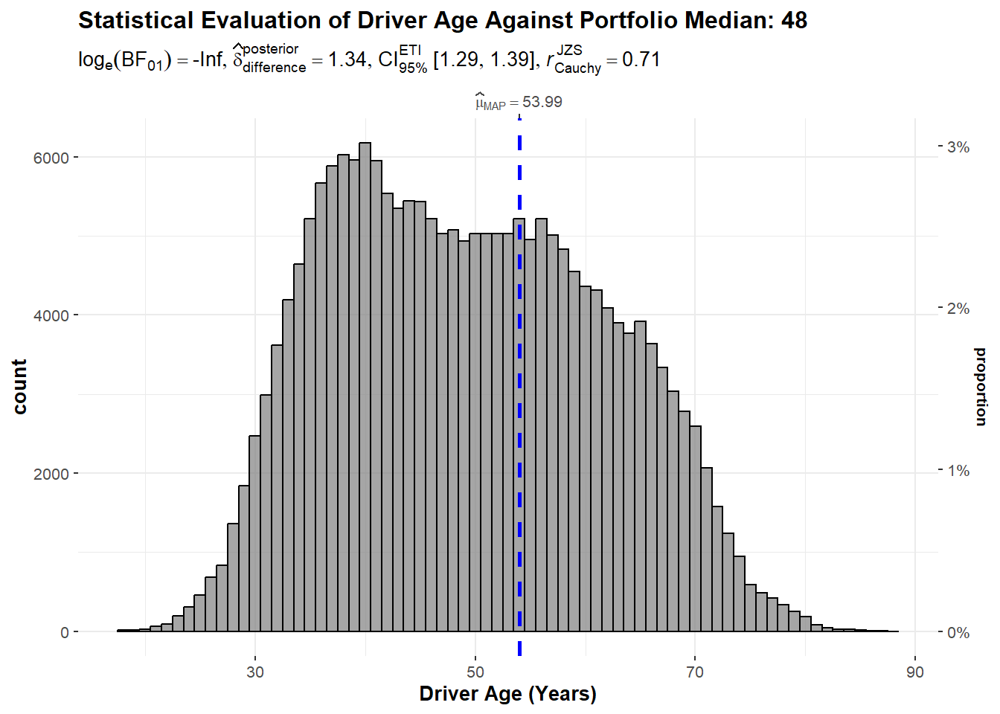
From the above chart, we can conclude that with absolute statistical certainty that this sub-portfolio has drifted into a structurally older demographic risk profile than the overall portfolio”
ggstatsplot::gghistostats(
data = df_transformed %>% filter(policy_type == "Basic Third-Party") ,
x = driver_age,
type = "bayesian",
test.value = median(df_transformed$driver_age, na.rm = TRUE),
binwidth = 1,
title = glue("Statistical Evaluation of Driver Age Against Portfolio Median: {median(df_transformed$driver_age, na.rm = TRUE)}"),
xlab = "Driver Age (Years)",
ylab = "Count"
)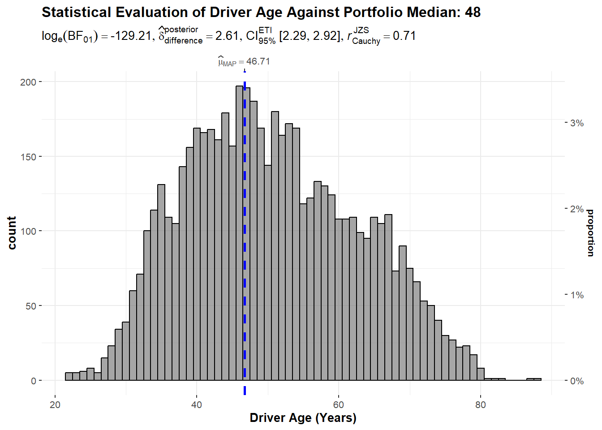
Similarly, the median age of Basic Third Party is below the median average of the whole portfolio.
From the above chart, we can conclude that with absolute statistical certainty that this sub-portfolio has drifted into a structurally older demographic risk profile than the overall portfolio”
ggstatsplot::gghistostats(
data = df_transformed %>% filter(policy_type == "Third-Party with two or more Cov") ,
x = vehicle_age,
type = "bayesian",
test.value = median(df_transformed$vehicle_age, na.rm = TRUE),
binwidth = 1,
title = glue("Statistical Evaluation of Vehicle Age Against Portfolio Median: {median(df_transformed$vehicle_age, na.rm = TRUE)}"),
xlab = "Vehicle Age (Years)",
ylab = "Count"
)ggstatsplot::gghistostats(
data = df_transformed %>% filter(policy_type == "Basic Third-Party") ,
x = vehicle_age,
type = "bayesian",
test.value = median(df_transformed$vehicle_age, na.rm = TRUE),
binwidth = 1,
title = glue("Statistical Evaluation of Vehicle Age Against Portfolio Median: {median(df_transformed$vehicle_age, na.rm = TRUE)}"),
xlab = "Vehicle Age (Years)",
ylab = "Count"
)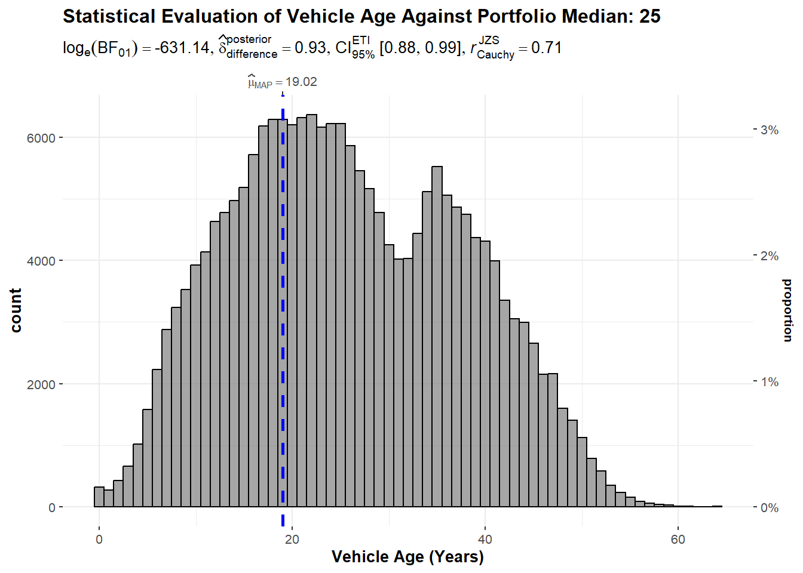
In this section, we want to understand for ‘Third-Party with two or more Cov’/‘Basic Third Party’ portfolio. What are the claims most triggered?
# 1. Isolate the subset and select the binary claim columns
df_claims_raw <- df_transformed %>%
filter(policy_type == "Third-Party with two or more Cov") %>%
select(
insured_id, year,
liability_property_claims, liability_injury_claims,
property_claims, theft_claims, fire_claims,
glass_claims, legal_protection_claims, occupants_claims
) %>%
filter(rowSums(select(., ends_with("_claims"))) > 0)
set.seed(123)
df_sample <- df_claims_raw %>%
mutate(policy_row_index = row_number()) # Create a clean Y-axis identifier
#
df_heatmap_ready <- df_sample %>%
pivot_longer(
cols = ends_with("_claims"),
names_to = "Claim_Type",
values_to = "Claim_Present"
) %>%
mutate(
Claim_Type = str_remove(Claim_Type, "_claims"),
Claim_Type = str_replace_all(Claim_Type, "_", " "),
Claim_Status = ifelse(Claim_Present == 1, "Claim Filed (1)", "No Claim (0)")
)
ggplot(df_heatmap_ready, aes(x = Claim_Type, y = factor(policy_row_index), fill = Claim_Status)) +
geom_tile() +
scale_fill_manual(values = c("Claim Filed (1)" = "#E46726", "No Claim (0)" = "#F0F0F0")) +
theme_minimal(base_size = 12) +
labs(
title = "Claims Activation Heatmap",
subtitle = glue("Visual matrix audit of {nrow(df_sample)} claim-active policies"),
x = "Coverage Type",
y = "",
fill = "Status"
) +
theme(
plot.title = element_text(face = "bold", size = 14),
axis.text.x = element_text(angle = 45, vjust = 1, hjust = 1, face = "bold"),
axis.text.y = element_blank(),
axis.ticks.y = element_blank(),
panel.grid.major.y = element_blank(),
panel.grid.minor.y = element_blank(),
panel.grid.major.x = element_line(color = "white", linewidth = 0.5),
legend.position = "top"
)df_claims_raw <- df_transformed %>%
filter(policy_type == "Basic Third-Party") %>%
select(
insured_id, year,
liability_property_claims, liability_injury_claims,
property_claims, theft_claims, fire_claims,
glass_claims, legal_protection_claims, occupants_claims
) %>%
filter(rowSums(select(., ends_with("_claims"))) > 0)
set.seed(123)
df_sample <- df_claims_raw %>%
mutate(policy_row_index = row_number()) # Create a clean Y-axis identifier
df_heatmap_ready <- df_sample %>%
pivot_longer(
cols = ends_with("_claims"),
names_to = "Claim_Type",
values_to = "Claim_Present"
) %>%
mutate(
Claim_Type = str_remove(Claim_Type, "_claims"),
Claim_Type = str_replace_all(Claim_Type, "_", " "),
Claim_Status = ifelse(Claim_Present == 1, "Claim Filed (1)", "No Claim (0)")
)
ggplot(df_heatmap_ready, aes(x = Claim_Type, y = factor(policy_row_index), fill = Claim_Status)) +
geom_tile() +
scale_fill_manual(values = c("Claim Filed (1)" = "#E46726", "No Claim (0)" = "#F0F0F0")) +
theme_minimal(base_size = 12) +
labs(
title = "Claims Activation Heatmap",
subtitle = glue("Visual matrix audit of {nrow(df_sample)} claim-active policies"),
x = "Coverage Type",
y = "",
fill = "Status"
) +
theme(
plot.title = element_text(face = "bold", size = 14),
axis.text.x = element_text(angle = 45, vjust = 1, hjust = 1, face = "bold"),
axis.text.y = element_blank(),
axis.ticks.y = element_blank(),
panel.grid.major.y = element_blank(),
panel.grid.minor.y = element_blank(),
panel.grid.major.x = element_line(color = "white", linewidth = 0.5),
legend.position = "top"
)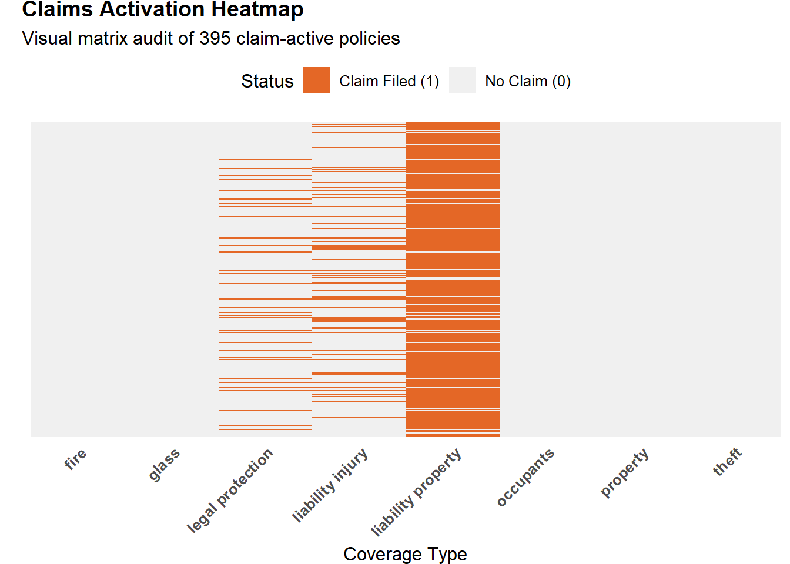
This section performs multi-variate analysis to understand the relationship between drivers age, vehicle age and claims.
heatmap_data <- df_transformed %>%
filter(policy_type == "Third-Party with two or more Cov") %>%
# Create logical bins for your continuous variables
mutate(
age_bin = cut(driver_age,
breaks = c(17, 25, 35, 45, 55, 65, Inf),
labels = c("18-25", "26-35", "36-45", "46-55", "56-65", "66+")),
v_age_bin = cut(vehicle_age,
breaks = c(-1, 3, 6, 10, 15, Inf),
labels = c("0-3 yrs", "4-6 yrs", "7-10 yrs", "11-15 yrs", "16+ yrs"))
) %>%
group_by(age_bin, v_age_bin) %>%
summarise(
total_policies = n(),
total_liability_claims = sum(liability_property_claims, na.rm = TRUE),
claim_rate = total_liability_claims / total_policies,
.groups = "drop"
) %>%
filter(total_policies > 10)
# 2. Plot the binned matrix
ggplot(heatmap_data, aes(x = v_age_bin, y = age_bin, fill = claim_rate)) +
geom_tile(color = "white", lwd = 0.5, linetype = 1) +
scale_fill_viridis_c(option = "inferno", direction = -1, name = "Claim Rate") +
geom_text(aes(label = scales::percent(claim_rate, accuracy = 0.1)),
color = "white", size = 3.5, fontface = "bold") +
labs(
title = "Liability Claim Frequency Matrix",
subtitle = "Identifying localized risk spikes across driver and vehicle age pockets",
x = "Vehicle Age Group",
y = "Driver Age Group"
) +
theme_minimal() +
theme(
plot.title = element_text(face = "bold", size = 14),
axis.text = element_text(size = 11),
panel.grid = element_blank()
)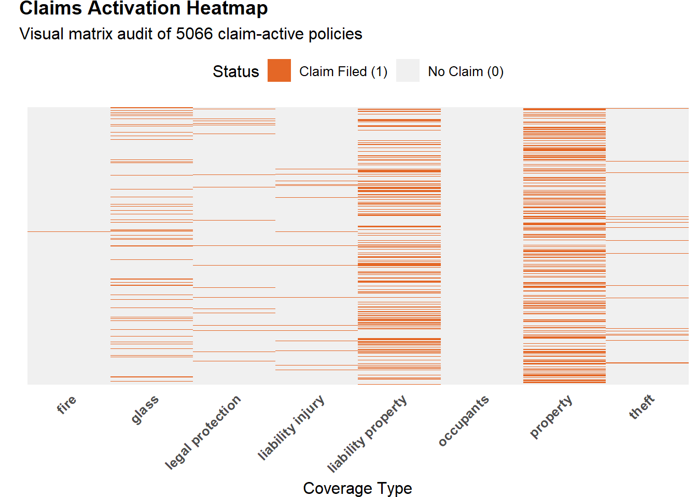
Our liability property claim spike is being driven by two specific operational pockets: middle-aged to senior drivers operating brand-new or modern vehicles (0–6 years old), alongside a high, persistent baseline risk from our under-35 cohort across all car ages.
heatmap_data <- df_transformed %>%
filter(policy_type == "Basic Third-Party") %>%
# Create logical bins for your continuous variables
mutate(
age_bin = cut(driver_age,
breaks = c(17, 25, 35, 45, 55, 65, Inf),
labels = c("18-25", "26-35", "36-45", "46-55", "56-65", "66+")),
v_age_bin = cut(vehicle_age,
breaks = c(-1, 3, 6, 10, 15, Inf),
labels = c("0-3 yrs", "4-6 yrs", "7-10 yrs", "11-15 yrs", "16+ yrs"))
) %>%
group_by(age_bin, v_age_bin) %>%
summarise(
total_policies = n(),
total_liability_claims = sum(liability_property_claims, na.rm = TRUE),
claim_rate = total_liability_claims / total_policies,
.groups = "drop"
) %>%
filter(total_policies > 10)
# 2. Plot the binned matrix
ggplot(heatmap_data, aes(x = v_age_bin, y = age_bin, fill = claim_rate)) +
geom_tile(color = "white", lwd = 0.5, linetype = 1) +
scale_fill_viridis_c(option = "inferno", direction = -1, name = "Claim Rate") +
geom_text(aes(label = scales::percent(claim_rate, accuracy = 0.1)),
color = "white", size = 3.5, fontface = "bold") +
labs(
title = "Liability Claim Frequency Matrix",
subtitle = "Identifying localized risk spikes across driver and vehicle age pockets",
x = "Vehicle Age Group",
y = "Driver Age Group"
) +
theme_minimal() +
theme(
plot.title = element_text(face = "bold", size = 14),
axis.text = element_text(size = 11),
panel.grid = element_blank()
)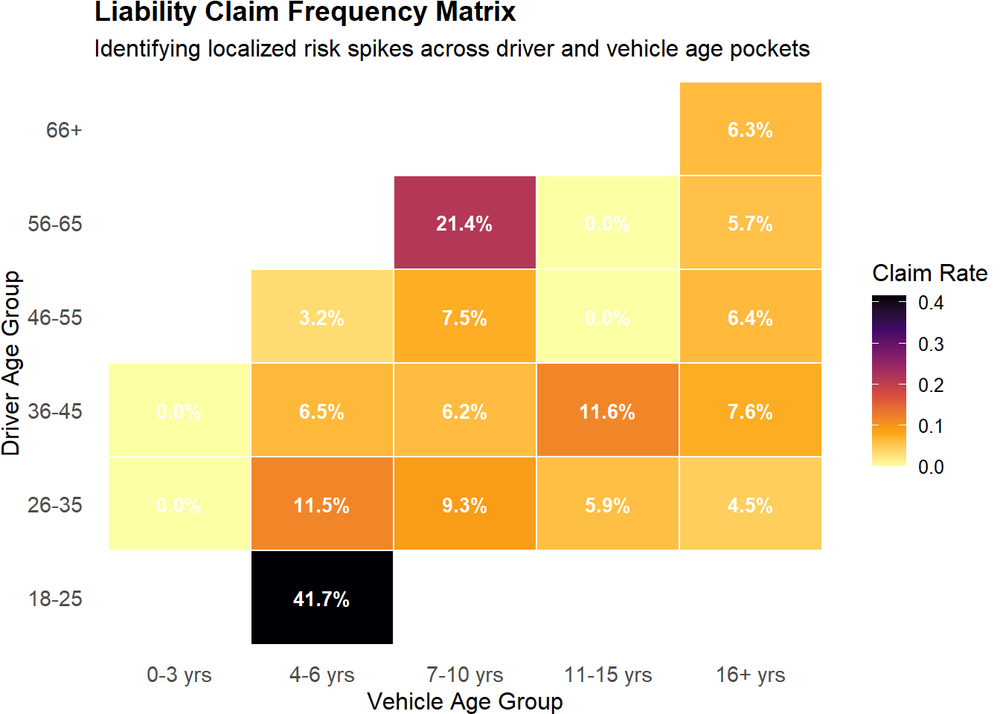
corr_data <- df_transformed %>%
select(
driver_age,
vehicle_age,
age_driving_licence,
vehicle_value,
total_premium,
power_to_weight_ratio,
liability_property_claims # Your target claim count metric
) %>%
# Ensure all selected features are strictly evaluated as numeric matrices
mutate(across(everything(), as.numeric)) %>%
# Handle missing records safely to maintain clean row-counts
mutate(across(everything(), ~tidyr::replace_na(.x, 0)))
# 2. Generate the statistical correlation matrix
ggcorrmat(
data = corr_data,
type = "spearman", # Use "nonparametric" for Spearman or "bayesian" if preferred
colors = c("#2c7bb6", "#ffffbf", "#d7191c"), # Classic blue-to-red diverging scale
title = "Portfolio Risk Profile: Correlation Matrix Matrix",
subtitle = "Evaluating linear relationships across driver metrics, vehicle assets, and claim outcomes",
show.legend = TRUE,
matrix.type = "upper", # Shows top triangle to remove visual redundancy
lab.size = 3.5, # Size of correlation coefficients inside the squares
ggtheme = ggplot2::theme_minimal()
)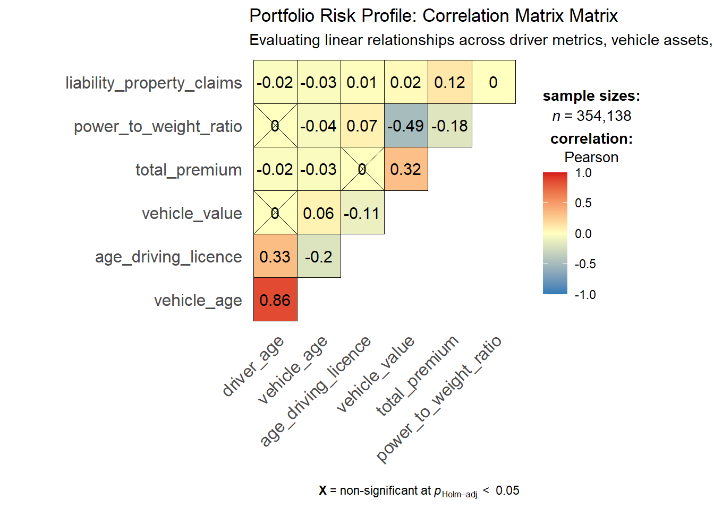
# 1. Isolate and clean the factors
cramer_df <- df_transformed %>%
filter(policy_type == "Basic Third-Party") %>%
select(
policy_status, business_type, payment_frequency,
bonus_score, fuel_type, vehicle_brand,
municipality_type, circulation_area
) %>%
mutate(across(everything(), as.factor))
# 2. Compute the exact 8x8 Cramér's V matrix mathematically
cat_vars <- colnames(cramer_df)
n_vars <- length(cat_vars)
v_matrix <- matrix(NA, nrow = n_vars, ncol = n_vars, dimnames = list(cat_vars, cat_vars))
for (i in 1:n_vars) {
for (j in 1:n_vars) {
# Generate cross-tabulation table
contingency_table <- table(cramer_df[[cat_vars[i]]], cramer_df[[cat_vars[j]]])
# Store the scalar Cramer's V value
v_matrix[i, j] <- assocstats(contingency_table)$cramer
}
}
# 3. Convert the matrix to a long data frame format for ggplot
v_long <- as.data.frame(v_matrix) %>%
mutate(Variable1 = rownames(.)) %>%
pivot_longer(cols = -Variable1, names_to = "Variable2", values_to = "CramersV")
# 4. Plot a clean, beautifully spaced association tile grid
ggplot(v_long, aes(x = Variable1, y = Variable2, fill = CramersV)) +
geom_tile(color = "white", linewidth = 0.5) +
scale_fill_gradient2(low = "#ffffbf", mid = "#fdae61", high = "#d7191c",
midpoint = 0.5, limit = c(0, 1), name = "Cramér's V") +
geom_text(aes(label = round(CramersV, 2)), color = "black", fontface = "bold", size = 4) +
labs(
title = "Clean Categorical Feature Association Matrix",
subtitle = "Calculated via global chi-square contingencies | Exactly 8x8 Dimensions",
x = NULL, y = NULL
) +
theme_minimal(base_size = 12) +
theme(
axis.text.x = element_text(angle = 45, vjust = 1, hjust = 1, face = "bold"),
axis.text.y = element_text(face = "bold"),
panel.grid = element_blank()
)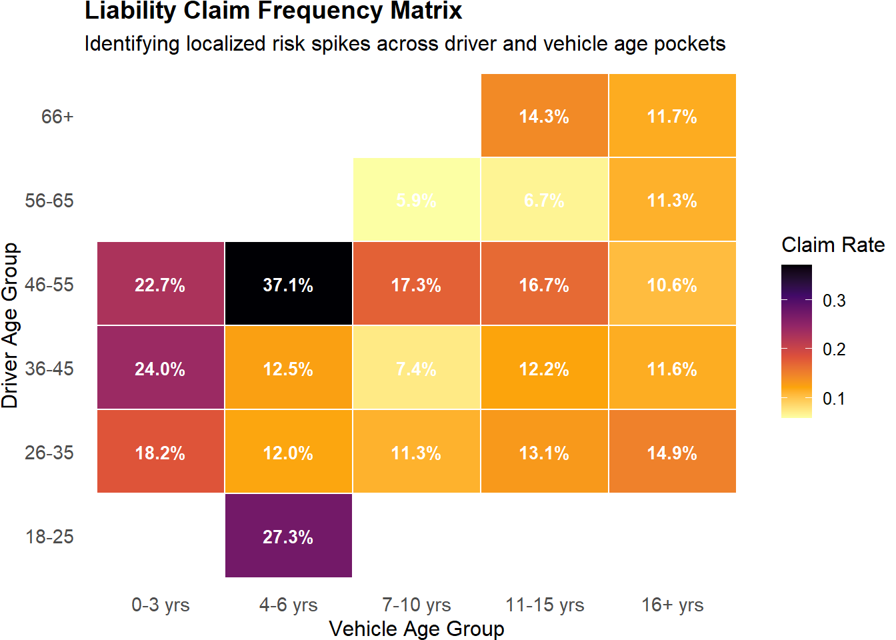
In this section we will take into account the exposure column. Create variables to address the “Average Premium Revenue per Unit of Exposure Year” in section 1
## driver age
premium_exposure_analysis <- df_transformed %>%
filter(policy_type == "Third-Party with two or more Cov") %>%
mutate(
age_bin = cut(driver_age,
breaks = c(17, 25, 35, 45, 55, 65, Inf),
labels = c("18-25", "26-35", "36-45", "46-55", "56-65", "66+"))) %>%
group_by(age_bin) %>%
summarise(
total_premium = sum(total_premium, na.rm = TRUE),
total_exposure = sum(liability_exposure, na.rm = TRUE),
.groups = "drop"
) %>%
filter(total_exposure > 0) %>%
mutate(avg_premium_per_exposure = total_premium / total_exposure)
# 1. Rename the variable to match its true mathematical scope
plan_avg_premium <- sum(premium_exposure_analysis$total_premium) / sum(premium_exposure_analysis$total_exposure)
# 2. Update the conditional logic flag
premium_exposure_analysis <- premium_exposure_analysis %>%
mutate(
pricing_status = ifelse(
avg_premium_per_exposure >= plan_avg_premium,
"Above/At Plan Average",
"Below Plan Average"
)
)
# 3. Update the ggplot layers to use the correct labels
p1 <- ggplot(premium_exposure_analysis, aes(x = age_bin, y = avg_premium_per_exposure, fill = pricing_status)) +
geom_col(width = 0.6, color = "white", lwd = 0.5) +
# Update the threshold line target
geom_hline(yintercept = plan_avg_premium, linetype = "dashed", color = "gray40", linewidth = 1) +
# Update the text label mapping onto the chart space
annotate("text", x = 1.5, y = plan_avg_premium + 15,
label = paste0(" Plan Average Baseline: $", round(plan_avg_premium, 2)),
color = "gray30", fontface = "italic", size = 3.5) +
scale_fill_manual(
values = c("Above/At Plan Average" = "#2ca02c", "Below Plan Average" = "#d62728")
) +
labs(
title = "Average Premium Revenue per Unit of Exposure Year",
subtitle = "Slicing Third-Party with two or more Cov plan to spot sub-group underpricing",
x = "Driver Age Group",
y = "Premium Revenue / Exposure Year ($)"
)
#vehicle age
premium_exposure_analysis <- df_transformed %>%
filter(policy_type == "Third-Party with two or more Cov") %>%
mutate(
v_age_bin = cut(vehicle_age,
breaks = c(-1, 3, 6, 10, 15, Inf),
labels = c("0-3 yrs", "4-6 yrs", "7-10 yrs", "11-15 yrs", "16+ yrs"))) %>%
group_by(v_age_bin) %>%
summarise(
total_premium = sum(total_premium, na.rm = TRUE),
total_exposure = sum(liability_exposure, na.rm = TRUE),
.groups = "drop"
) %>%
filter(total_exposure > 0) %>%
mutate(avg_premium_per_exposure = total_premium / total_exposure)
# 1. Rename the variable to match its true mathematical scope
plan_avg_premium <- sum(premium_exposure_analysis$total_premium) / sum(premium_exposure_analysis$total_exposure)
# 2. Update the conditional logic flag
premium_exposure_analysis <- premium_exposure_analysis %>%
mutate(
pricing_status = ifelse(
avg_premium_per_exposure >= plan_avg_premium,
"Above/At Plan Average",
"Below Plan Average"
)
)
# 3. Update the ggplot layers to use the correct labels
p2 <- ggplot(premium_exposure_analysis, aes(x = v_age_bin, y = avg_premium_per_exposure, fill = pricing_status)) +
geom_col(width = 0.6, color = "white", lwd = 0.5) +
# Update the threshold line target
geom_hline(yintercept = plan_avg_premium, linetype = "dashed", color = "gray40", linewidth = 1) +
# Update the text label mapping onto the chart space
annotate("text", x = 1.5, y = plan_avg_premium + 15,
label = paste0(" Plan Average Baseline: $", round(plan_avg_premium, 2)),
color = "gray30", fontface = "italic", size = 3.5) +
scale_fill_manual(
values = c("Above/At Plan Average" = "#2ca02c", "Below Plan Average" = "#d62728")
) +
labs(
title = "Average Premium Revenue per Unit of Exposure Year",
subtitle = "Slicing Third-Party with two or more Cov plan to spot sub-group underpricing",
x = "Vehicle Age Group",
y = "Premium Revenue / Exposure Year ($)"
)
p1 +p2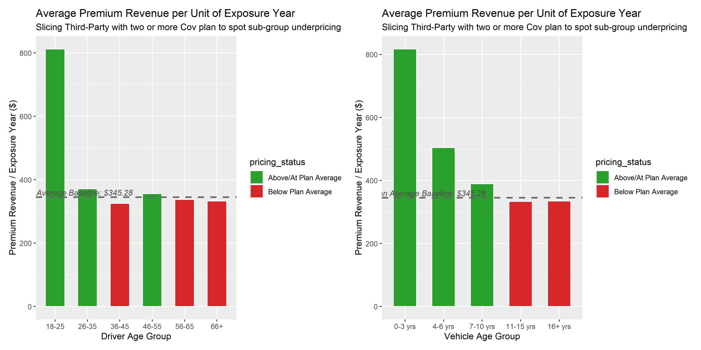
# Driver age
premium_exposure_analysis <- df_transformed %>%
filter(policy_type == "Third-Party with two or more Cov") %>%
mutate(
age_bin = cut(driver_age,
breaks = c(17, 25, 35, 45, 55, 65, Inf),
labels = c("18-25", "26-35", "36-45", "46-55", "56-65", "66+"))) %>%
group_by(age_bin) %>%
summarise(
total_premium = sum(total_premium, na.rm = TRUE),
total_exposure = sum(liability_exposure, na.rm = TRUE),
.groups = "drop"
) %>%
filter(total_exposure > 0) %>%
mutate(avg_premium_per_exposure = total_premium / total_exposure)
# 1. Rename the variable to match its true mathematical scope
plan_avg_premium <- sum(premium_exposure_analysis$total_premium) / sum(premium_exposure_analysis$total_exposure)
# 2. Update the conditional logic flag
premium_exposure_analysis <- premium_exposure_analysis %>%
mutate(
pricing_status = ifelse(
avg_premium_per_exposure >= plan_avg_premium,
"Above/At Plan Average",
"Below Plan Average"
)
)
# 3. Update the ggplot layers to use the correct labels
p1 <- ggplot(premium_exposure_analysis, aes(x = age_bin, y = avg_premium_per_exposure, fill = pricing_status)) +
geom_col(width = 0.6, color = "white", lwd = 0.5) +
# Update the threshold line target
geom_hline(yintercept = plan_avg_premium, linetype = "dashed", color = "gray40", linewidth = 1) +
# Update the text label mapping onto the chart space
annotate("text", x = 1.5, y = plan_avg_premium + 15,
label = paste0(" Plan Average Baseline: $", round(plan_avg_premium, 2)),
color = "gray30", fontface = "italic", size = 3.5) +
scale_fill_manual(
values = c("Above/At Plan Average" = "#2ca02c", "Below Plan Average" = "#d62728")
) +
labs(
title = "Average Premium Revenue per Unit of Exposure Year",
subtitle = "Slicing Third-Party with two or more Cov plan to spot sub-group underpricing",
x = "Driver Age Group",
y = "Premium Revenue / Exposure Year ($)"
)
## Vehicle age
premium_exposure_analysis <- df_transformed %>%
filter(policy_type == "Third-Party with two or more Cov") %>%
mutate(
v_age_bin = cut(vehicle_age,
breaks = c(-1, 3, 6, 10, 15, Inf),
labels = c("0-3 yrs", "4-6 yrs", "7-10 yrs", "11-15 yrs", "16+ yrs"))) %>%
group_by(v_age_bin) %>%
summarise(
total_premium = sum(total_premium, na.rm = TRUE),
total_exposure = sum(liability_exposure, na.rm = TRUE),
.groups = "drop"
) %>%
filter(total_exposure > 0) %>%
mutate(avg_premium_per_exposure = total_premium / total_exposure)
# 1. Rename the variable to match its true mathematical scope
plan_avg_premium <- sum(premium_exposure_analysis$total_premium) / sum(premium_exposure_analysis$total_exposure)
# 2. Update the conditional logic flag
premium_exposure_analysis <- premium_exposure_analysis %>%
mutate(
pricing_status = ifelse(
avg_premium_per_exposure >= plan_avg_premium,
"Above/At Plan Average",
"Below Plan Average"
)
)
# 3. Update the ggplot layers to use the correct labels
p2 <-ggplot(premium_exposure_analysis, aes(x = v_age_bin, y = avg_premium_per_exposure, fill = pricing_status)) +
geom_col(width = 0.6, color = "white", lwd = 0.5) +
# Update the threshold line target
geom_hline(yintercept = plan_avg_premium, linetype = "dashed", color = "gray40", linewidth = 1) +
# Update the text label mapping onto the chart space
annotate("text", x = 1.5, y = plan_avg_premium + 15,
label = paste0(" Plan Average Baseline: $", round(plan_avg_premium, 2)),
color = "gray30", fontface = "italic", size = 3.5) +
scale_fill_manual(
values = c("Above/At Plan Average" = "#2ca02c", "Below Plan Average" = "#d62728")
) +
labs(
title = "Average Premium Revenue per Unit of Exposure Year",
subtitle = "Slicing Third-Party with two or more Cov plan to spot sub-group underpricing",
x = "Vehicle Age Group",
y = "Premium Revenue / Exposure Year ($)"
)
p1 + p2